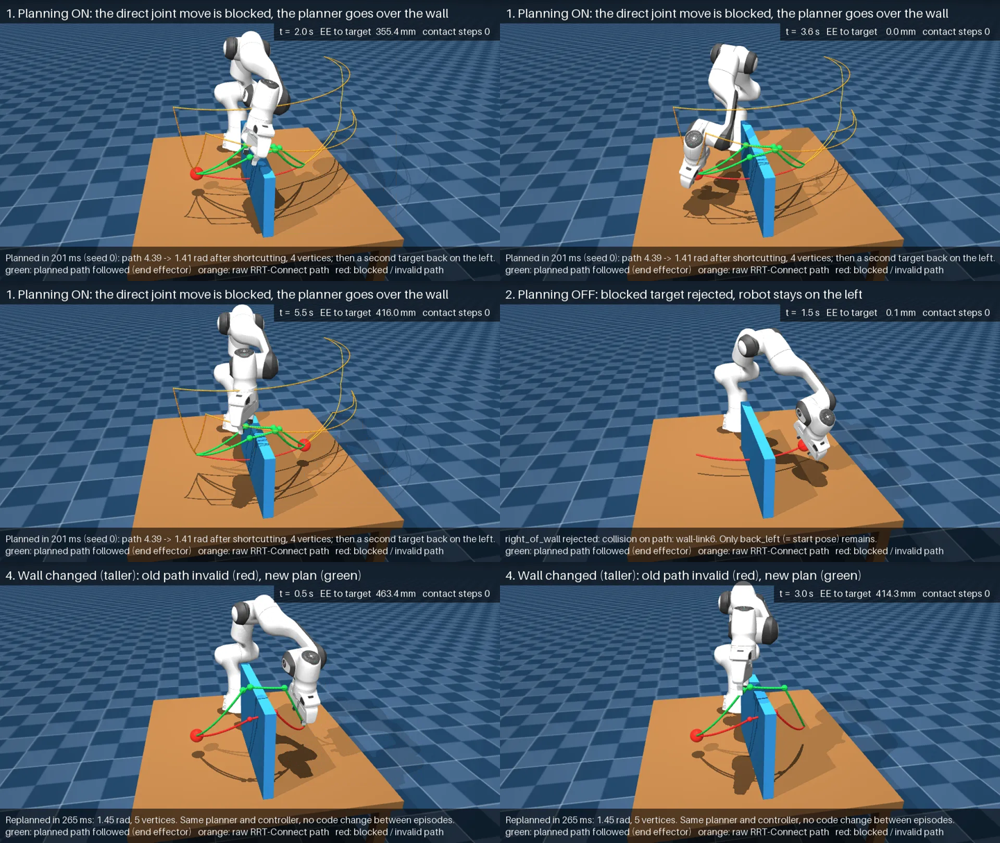
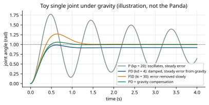
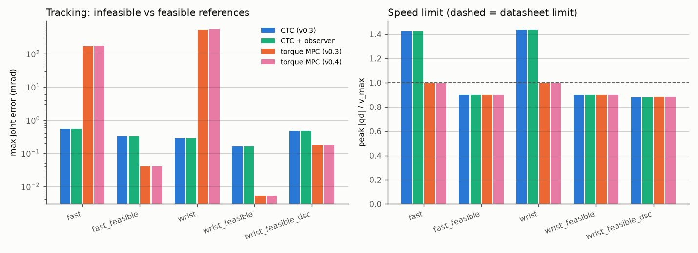
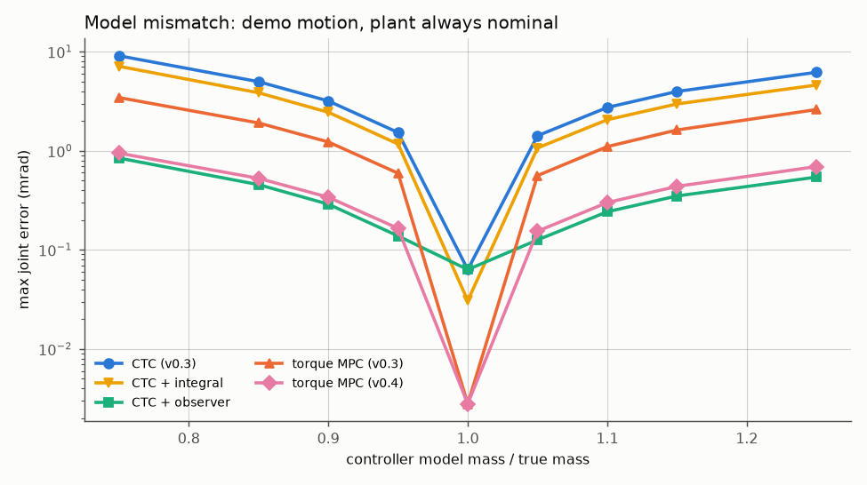
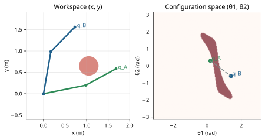
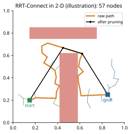
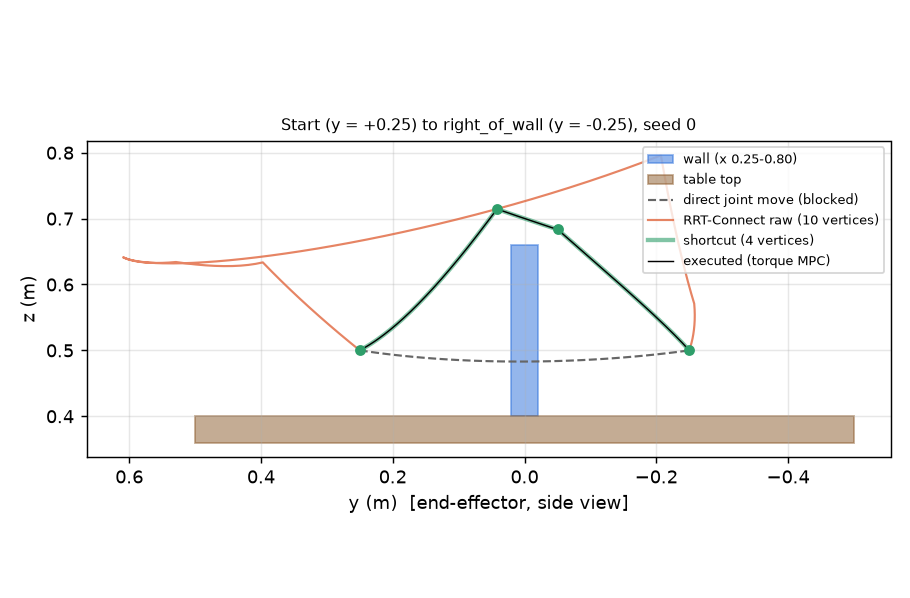

du on 19 Oct 2026, before this guide was
added). The installed third-party packages outweigh the project's own code by a factor of about 200.This guide has two jobs. It teaches the robotics, control and planning ideas that the project uses, starting from first-year engineering mathematics. It is also an accurate reference to the code itself: every class, equation and number is tied to a file in the repository so you can open it in VS Code and check.
You know calculus I–III, Newton's laws, moments and simple differential equations, and some Python or MATLAB. You do not need to know robotics, control theory, optimization or motion planning yet. Each chapter starts with intuition, explains why the idea matters, develops the mathematics at an accessible level, connects it to our code, gives an example from this project, and ends with its limitations. Later chapters (7, 8, 11, 20) go to the level of a graduate course or a research paper.
Robotics write-ups often blur "the code does this", "an experiment showed this", "the math implies this" and "we could do this". This guide keeps them apart with coloured boxes:
A fact read directly from the repository at commit 5dbeffd. The file and function are named, for
example controllers/torque_mpc.py TorqueMPCController._update.
A number measured by one of the project's experiments, quoted from its research report or CSV file (docs/research/…). It holds for the stated conditions, sample size and machine. This guide did not re-run the large benchmarks; it quotes them.
A conclusion that follows from equations, together with the assumptions it needs. If an assumption fails, so does the conclusion.
An idea for future work. Nothing in such a box exists in the code today.
A place where documentation and implementation disagree, or where a common misunderstanding is likely. These are investigated, not hidden.
Part I (Chapters 1–3) explains what the project is, tours the repository, and traces one
run of main.py from start to finish. Part II (4–6) is the mechanics:
kinematics, dynamics, MuJoCo and feedback control. Part III (7–9) is model predictive control,
first from first principles with a small worked example, then our exact implementation, then its
experiments. Part IV (10–12) covers motion planning, collision checking (including the
v0.5.1 box-box bug and its v0.5.2 fix) and trajectory generation. Part V (13–16) analyses
the architecture, the development history, every experiment and the test suite. Part VI
(17–20) assesses what the robot can do today and how perception, reactive planning and manipulation
could be added. Appendices A–E are a glossary, a mathematical reference, a source-code index, run
instructions and answers to common questions.
If you only have one evening, read Chapter 1, Chapter 3, Chapter 7 and Chapter 17.
A first look: the robot, the simulator, the problems the project tries to solve, and the vocabulary used in the rest of the guide.
Robotics Lab is a simulation platform for a robot arm. It contains no hardware and no real robot. A computer model of a seven-joint industrial research arm, the Franka Emika Panda, is simulated by the physics engine MuJoCo, and our Python code decides what torques the arm's motors apply at every instant. The goal is to build, piece by piece and with measured evidence, the software stack a real autonomous manipulator needs:
The fourth point shapes the whole repository. Most of its 7,000 lines of project Python are the controller, planner and simulation code. A large share, however, consists of benchmarks, audit tools and 189 automated tests, and every milestone has a written research report in docs/research/.
Simulation comes first because it is cheap, repeatable and safe. A controller bug that drives a real Panda into a table can damage an expensive robot; in MuJoCo it just produces a number in a CSV file. Simulation also gives perfect measurements (the exact joint angles, the exact distance to an obstacle), which makes it possible to test whether an algorithm is correct before asking whether it is robust to sensor noise. The price is the reality gap: anything learned in simulation needs to be checked again on hardware. This project has not crossed that gap (Chapter 17).
The Panda is a collaborative robot arm widely used in research labs. It has seven revolute (rotating) joints in a chain from the base to the hand, plus a two-finger parallel gripper. Seven joints give it one more degree of freedom than the six needed to place a hand at an arbitrary position and orientation in 3-D space, so it is redundant: the same hand position can be reached with a whole family of arm postures (elbow up, elbow down and everything between).
The arm model is a verbatim copy of Google DeepMind's MuJoCo Menagerie Panda
(robots/models/franka_emika_panda/, commit d7b481b recorded in
SOURCE.txt). It is never edited; every change (torque motors, an end-effector
site) is made in code by robots/panda.py. The arm's total mass in the model
is 17.45 kg. Joint limits come from the XML; speed, acceleration and jerk limits from the Franka
datasheet are constants in robots/panda.py
(VELOCITY_LIMITS = 2.175 rad/s for joints 1–4 and 2.61 rad/s for joints 5–7). The motor
torque limits are 87 Nm (joints 1–4) and 12 Nm (joints 5–7).
The Menagerie model ships with position servos: you command a desired joint angle and a
stiff spring-damper inside the simulator pulls the joint there. In v0.3 the project added a
torque-motor variant in which our code commands the joint torques directly, which is how
modern research controllers are usually written. Both variants exist side by side
(Panda(actuation="position") or "torque"), and the choice of controller selects
the variant automatically (Chapter 3).
MuJoCo ("Multi-Joint dynamics with Contact") is an open-source physics engine designed for
robotics and control research. Given the robot's current state (joint angles and velocities) and the
motor commands, it computes how the state changes over one small time step, including gravity,
inertia, joint friction-like damping, motor limits and contact forces when bodies touch. Calling it
repeatedly advances simulated time. In this project one physics step is
2 ms (500 steps per simulated second), with MuJoCo's implicitfast integrator.
An environment is a MuJoCo scene file in environments/: a floor,
usually a table, sometimes obstacles. The robot is attached at runtime to a site named
robot_mount, so scene files know nothing about robots. There are five scenes:
empty, table, obstacles (a box and a cylinder on the table),
planning_demo (a wall across the table) and planning_narrow (the wall plus a
ceiling, leaving a 34 cm gap).

planning_demo scene). Green: executed end-effector path; orange: raw planner path; red: the
blocked straight-line motion. Source: docs/research/figures/v0.5.1_video_frames.png,
rendered by tools/render_demo_video.py.As of v0.5.2 the software can, entirely in simulation:
It does not perceive the world (no cameras), does not replan during motion, does not grasp objects, has no learning component, and has never controlled a real robot. Chapter 17 gives a precise capability matrix.
These five words are used loosely in everyday speech; in robotics they name distinct layers with different inputs, outputs and time scales. Keeping them apart is the single most useful habit for understanding this project.
| Layer | Question it answers | Typical rate | In this project |
|---|---|---|---|
| Simulation | Given motor commands, how does the world move? | 500 Hz here (2 ms) | MuJoCo, wrapped by simulation/engine.py. Replaces the real world. |
| Perception | What is around the robot, and where? | 10–60 Hz (cameras) | Absent. Obstacle geometry is read from the scene file: the planner is given the truth. |
| Planning | Which route through space reaches the goal without collision? | once per task here | planning/: IK postures, RRT-Connect, shortcutting, collision checking. Runs once before motion starts. |
| Trajectory generation | How fast should the robot move along that route? | once per task | tasks/trajectory.py: time-scaled minimum-jerk or double-S profiles. |
| Control | Which motor commands make the arm follow the trajectory now? | 50–500 Hz | controllers/: PID, servo MPC, CTC, torque MPC. |
| Learning | How can behaviour improve from data? | offline | Absent. No trained model anywhere in the code. |
A frequent confusion is to expect the controller to avoid obstacles. In this design it cannot: the controllers receive only a joint reference and the measured joint state, and know nothing about walls. Obstacle avoidance happens before motion, in the planner, and the controllers keep the arm on the planned route. Chapter 9 explains why closed-loop MPC alone does not give obstacle avoidance.
"Autonomous" means that the robot itself chooses actions to achieve a goal. Here is what the robot decides and what a human decided in advance:
| Decided by the software at run time | Fixed in advance by a person |
|---|---|
| Joint angles that reach a requested hand position (IK, with several candidate postures) | The goal positions or joint waypoints themselves (YAML config) |
| A collision-free route around known obstacles (random-sampling planner) | The obstacle geometry (scene files, optional overrides) |
| The duration of each motion segment, to respect limits | The limits and safety fractions (YAML) |
| Every motor torque, 50–500 times per second, from measured state | Controller type, gains, weights, horizons (YAML) |
| Rejecting an unreachable or blocked goal, with a reason | What to do next after a rejection (nothing: the target is skipped) |
So the robot is autonomous at the level of motion (how to get there safely) but not at the level of tasks (what to do and why). There is no perception, no task planner and no decision-making beyond "reach the listed targets in order".
The project's own documents state the direction: next pick-and-place, then reinforcement learning and other learning methods (CLAUDE.md, "Planned next: pick-and-place. RL and learning come later"). The pieces built so far (accurate torque control, feasibility-aware trajectories, collision-aware planning with clearance, and a careful evaluation harness) are the foundation such work needs. Chapters 18–20 discuss what would have to be added: perception, world models, reactive replanning, grasping, and how learned components could plug into the existing interfaces.
These terms are used everywhere later; Appendix A defines them again together with everything else.
| Term | Meaning in this guide |
|---|---|
| Degree of freedom (DOF) | An independent way the robot can move; the Panda arm has 7 (one per joint), the gripper 2 more (two finger slides, mechanically coupled). |
| Configuration $q$ | The vector of the 7 joint angles; it fixes the pose of every link. |
| Joint space / Cartesian space | Describing motion by joint angles $q$ versus by the hand's position $(x, y, z)$ in metres. |
| End effector (EE) | The working point of the robot; here a site between the fingertips, 0.1034 m from the hand body. |
| Actuator | The motor model at a joint; position servo (command = angle) or torque motor (command = torque). |
| Plant | The system being controlled: the simulated Panda. |
| Reference / setpoint | The desired value the controller tries to achieve (a joint trajectory). |
| Tracking error | Reference minus measured value; the primary quality metric. |
| Controller | Code that turns reference and measurement into actuator commands, called every 2 ms. |
| Planner | Code that finds a collision-free route before motion begins. |
| Clearance | Minimum distance between robot and environment; the planner targets ≥ 20 mm at checked configurations. |
| Episode / seed | One run of an experiment / the number that fixes the random choices so the run is reproducible. |
Every folder and every important file: what it is for, what it takes in and gives back, what depends on it, and whether it is still used. The descriptions come from reading the source at commit 5dbeffd, not from the README.
The repository root is C:\Users\rkhmh\robotics-lab. Git tracks 451 objects
(12.4 MB of history). The tree below lists every tracked file except the 70 files of the vendored robot
model and the data files in docs/research; line counts are from
wc -l.
robotics-lab/ ├── main.py 159 entry point: one simulation, viewer or headless (Ch. 3) ├── benchmark.py 76 CLI: controller benchmark → simulation/benchmark.py ├── planning_benchmark.py 47 CLI: planner benchmark → simulation/planning_benchmark.py ├── robustness_experiment.py 46 CLI: wall-variant experiment → simulation/robustness.py ├── requirements.txt 11 mujoco 3.16.0, numpy, scipy, osqp, PyYAML, pytest, matplotlib ├── README.md / CLAUDE.md user guide / working rules and hard-won facts for developers ├── robots/ │ ├── panda.py 107 Panda: names, limits, home pose, MjSpec edits (torque motors, EE site) │ └── models/franka_emika_panda/ THIRD-PARTY: MuJoCo Menagerie MJCF + meshes (never edited) ├── environments/ 5 MJCF scenes: empty, table, obstacles, planning_demo, planning_narrow ├── simulation/ │ ├── engine.py 215 SimulationEngine: builds the scene, owns MjModel/MjData, steps physics │ ├── runner.py 440 SimulationRunner: config → engine + task + controller; control loop │ ├── kinematics.py 163 ArmKinematics: FK, Jacobian, DLS inverse kinematics, contact checks │ ├── benchmark.py 408 controller benchmark: scenarios, metrics, CSV/JSON/plots │ ├── planning_benchmark.py 407 planner benchmark: planning statistics + closed-loop execution │ └── robustness.py 348 wall-variant episodes, ExactClearance metric ├── controllers/ │ ├── base.py 34 Controller interface: reset(), compute(q, qd, q_ref, qd_ref, dt, t, qdd_ref) │ ├── pid.py 56 JointPIDController (position servos, v0.1) │ ├── prediction.py 311 MuJoCoPredictionModel: linearized MuJoCo dynamics x⁺ = Ax + Bu + c │ ├── mpc.py 543 JointMPCController: servo-setpoint MPC (v0.2) + shared MPC statistics │ ├── computed_torque.py 81 ComputedTorqueController (v0.3) │ ├── torque_mpc.py 380 TorqueMPCController (v0.3/v0.4) — the main controller │ ├── dynamics.py 44 ArmInverseDynamics: mj_inverse on scratch data │ └── disturbance.py 83 JointDisturbanceObserver (v0.4) ├── tasks/ │ ├── joint_target.py 156 JointTargetTask: waypoints → timed reference q(t), q̇(t), q̈(t) │ ├── trajectory.py 341 time scaling: quintic, double-S, feasibility checks (v0.4) │ ├── reach.py 135 CartesianReachTask: (x, y, z) targets via IK or the planner │ ├── planned_joint.py 105 PlannedJointTask: joint waypoints joined by planned paths (v0.5) │ └── pick_place.py 0 EMPTY placeholder, imported by nothing ├── planning/ v0.5 motion planning │ ├── collision.py 365 CollisionChecker: configuration/edge validity with clearance │ ├── rrt_connect.py 210 RRTConnect: bidirectional sampling planner │ ├── shortcut.py 106 pruning + random shortcuts, re-validated │ ├── ik.py 86 ik_candidates: several collision-free IK postures │ ├── motion_planner.py 186 MotionPlanner facade: plan_joint / plan_to_position │ └── visualization.py 70 planned-path markers for the viewer (visual only) ├── configs/ 7 YAML files: default, reach, planning_demo, benchmarks, wall variants ├── tests/ 12 files, 157 test functions, 189 collected tests (Ch. 16) ├── tools/ 11 scripts: audits, diagnostics, profilers, plots, video renderer ├── docs/research/ reports v0.3–v0.5.2, worklogs, CSV data, 14 figures └── results/ git-ignored benchmark outputs and videos (27 MB)
tasks/pick_place.py exists but is empty (0 lines) since the very first commit
(184bfd6). Nothing imports it. It marks a planned feature, not an implemented one. Likewise, the module
docstring of simulation/runner.py says the controller is "joint_pid or joint_mpc",
but the code supports four types (CONTROLLER_TYPES also has torque_ctc and
torque_mpc); the docstring was not updated in v0.3. The comment in
configs/default.yaml lists the environments as "table | empty | obstacles" and
omits the two planning scenes, which do work.
The code follows one rule stated in CLAUDE.md: modules are separated by role. Environments know nothing about robots; tasks only produce references; controllers only produce actuator commands; the planner runs before motion and is invisible to the controllers. Figure 2.1 shows how the pieces connect during a run.
SimulationRunner, which builds the
engine, optionally the planner, the task and the controller. The planner runs once, while the task is
being built. During motion only the dashed loop runs, 500 times per simulated second.Not everything in the folder is "the project". It helps to know which bytes are ours, which are other people's, and which are generated.
| Category | Where | Tracked by Git? | Notes |
|---|---|---|---|
| Project source (Python) | root scripts, simulation/, controllers/, tasks/, planning/, robots/panda.py | yes | about 7,000 lines including tools; this is what the guide documents |
| Configuration and scenes | configs/, environments/ | yes | YAML and MJCF; small |
| Tests | tests/ | yes | 2,673 lines, 189 tests |
| Third-party robot model | robots/models/franka_emika_panda/ | yes (vendored) | Apache-2.0, 34.6 MB of meshes; never edited |
| Third-party Python packages | .venv/ | no (.gitignore) | 409 MB: SciPy 117 MB, MuJoCo 62 MB, NumPy 55 MB, Matplotlib 33 MB, PyOpenGL 30 MB |
| Research documentation | docs/research/ | yes | reports, worklogs, CSV copies of results, figures |
| Generated results | results/ | no (.gitignore) | 27 MB; videos 14 MB; each benchmark run writes a folder |
| Caches | __pycache__/, .pytest_cache/ | no | regenerated automatically |
| Git history | .git/ | — | 13.8 MB, 18 commits from 14 to 19 Oct 2026 |
du on 19 Oct 2026, before this guide was
added). The installed third-party packages outweigh the project's own code by a factor of about 200.robots/panda.py defines the frozen dataclass Panda, a
name-level description of the robot: joint names (joint1…joint7), actuator names,
the base body link0, the end-effector site ee_site, the home pose
HOME_QPOS, and the datasheet velocity, acceleration and jerk limits. Its method
load_spec() loads the Menagerie XML into an editable mujoco.MjSpec, adds the
end-effector site 0.1034 m below the hand body (between the fingertips), and, for
actuation="torque", calls _make_torque_actuators, which rewrites actuators 1–7
from position servos to direct torque motors with the same force limits. Input: the actuation
choice. Output: an MjSpec. Used by: SimulationEngine and the tests.
environments/*.xml are MuJoCo scene files. Each must provide a
robot_mount site, a mocap body named target (the red marker sphere, which cannot
collide), and the implicitfast integrator with a 2 ms timestep. They are pure data and are
read by build_spec.
engine.py — SimulationEngine. build_spec(environment,
robot, overrides) loads the scene, applies optional geometry overrides (v0.5.1), attaches the robot
at the mount site, and excludes base-table contact. The constructor compiles the model and creates
MjModel/MjData, then caches index arrays: arm_qpos_adr,
arm_dof_adr (where the arm joints live in MuJoCo's state vectors), actuator ids, joint limits
and command limits. Methods: reset(arm_qpos) (the only place joint positions are
written), arm_qpos(), arm_qvel(), ee_position(),
set_arm_command(ctrl) (clips to the actuator command range), step(),
apply_external_force() (for push tests), perturbed_model(mass_scale) (a copy with
wrong masses for mismatch experiments), forward_kinematics(q) and robot_contacts().
The attribute controller_model is the model handed to model-based controllers; it equals the
plant model unless a mismatch experiment replaces it. Used by almost everything.
runner.py — SimulationRunner is the
composition root: the one place that knows about every other module. load_config
reads YAML with single inheritance (extends:). build_controller and its helpers
(build_pid, build_mpc, build_ctc, build_torque_mpc,
build_observer) construct controllers from config. The runner's _build_task builds
the task (and the planner if enabled); step() is the control loop body;
run_headless() returns a RunLog; run_viewer() opens MuJoCo's passive
viewer and paces the simulation to wall-clock time. Chapter 3 walks through it line by line.
kinematics.py — ArmKinematics computes forward kinematics
(fk, fk_pose), the 3×7 end-effector Jacobian (jacobian, via
mj_jacSite), damped-least-squares inverse kinematics (solve_ik), contact queries
(contacts, path_contacts) and the v0.3 "IK + straight-path collision check"
planner plan_target. It also provides rotation_angle for orientation metrics. It
always works on private scratch data. Used by the runner, the planner (planning/ik.py),
the benchmarks and the video tool.
benchmark.py, planning_benchmark.py,
robustness.py are experiment drivers. They build runner configurations for
each (controller, scenario) or (scenario, seed) pair, run them headless, compute metrics from the simulated
robot (never from controller predictions) and write CSV/JSON/Markdown/plots to results/.
robustness.py also defines ExactClearance, an independent distance measurement
with mj_geomDistance over every robot–environment geom pair. Chapter 15 covers the experiments.
| File / class | Inputs → outputs | Depends on | Status |
|---|---|---|---|
base.py Controller | abstract reset(), compute(q, q̇, q_ref, q̇_ref, dt, t, q̈_ref) → command | — | interface of all four |
pid.py JointPIDController | tracking error → servo setpoint (rad) | base | active (default controller; also servo-MPC fallback) |
prediction.py MuJoCoPredictionModel | (q, q̇, u) → affine model A, B, c over one control interval; gravity torque | MuJoCo | used by both MPCs |
mpc.py JointMPCController | state + reference preview → servo setpoint via OSQP | prediction, pid | active but weaker than PID (Ch. 9); MPCStats and helpers reused by the torque MPC |
dynamics.py ArmInverseDynamics | (q, q̇, q̈) → τ via mj_inverse | MuJoCo | used by CTC, observer, trajectory torque check |
computed_torque.py ComputedTorqueController | error → τ = ID(q, q̇, q̈_des) | dynamics, disturbance | active; torque-MPC fallback |
disturbance.py JointDisturbanceObserver | measured motion + applied τ → disturbance estimate d̂ (Nm) | dynamics | on by default in the torque MPC |
torque_mpc.py TorqueMPCController | state + preview → τ via OSQP | prediction, disturbance, mpc helpers | active; the main research controller |
A task turns a description of the goal into a reference: a function of time returning a
Reference(q, qd, waypoint_index, qdd). Tasks never touch the simulation.
JointTargetTask (joint_target.py): moves along straight
joint-space lines between waypoints, each move timed by plan_segment and followed by a hold.
Optional per-move durations (move_times, hold_times) support planned via points.
Can loop.quintic, DoubleS),
KinematicLimits, plan_segment (lengthens a move until velocity, acceleration, jerk
and torque limits hold, or raises TrajectoryInfeasible) and check_reference.CartesianReachTask (reach.py): resolves each (x, y, z)
target through an injected plan function (either IK + straight-path check, or the motion
planner), skips unreachable targets with a reason, and builds an internal JointTargetTask.PlannedJointTask (planned_joint.py): like
JointTargetTask but each move follows a planned path; raises PlanningFailed if any
move cannot be planned.CollisionChecker (collision.py): is a configuration valid
(inside joint limits minus 0.05 rad, no contact, ≥ 20 mm from the environment)? Is a straight edge between
two configurations valid at all its samples? Works on a private deep copy of the model with contact margins,
midphase disabled, and (since v0.5.2) exact distances for box-box pairs. Chapter 11.RRTConnect (rrt_connect.py): the bidirectional
rapidly-exploring random tree planner with time/node/iteration budgets. Chapter 10.shortcut, prune (shortcut.py): shorten a
valid path while keeping it valid.ik_candidates (ik.py): many IK solutions from
different seeds, filtered by the checker, sorted by distance from the start.MotionPlanner (motion_planner.py): facade with
plan_joint(q_start, q_goal) and plan_to_position(target, q_from) returning a
MotionPlan; PlanningSettings.from_config parses the YAML section.tests/ holds 12 pytest files (Chapter 16). tools/ holds one-off investigation scripts that were used to produce specific report sections; they are not part of the run-time system:
| Tool | Purpose (from its docstring) | Version |
|---|---|---|
audit_mpc_objective.py | checks the servo MPC's QP objective and constraints term by term | v0.3 |
audit_fallback.py | why the servo MPC hit its iteration budget in the wrist scenario | v0.3 |
sweep_mpc_variants.py, time_mpc.py | config-variant sweeps; median update timing | v0.3 |
diagnose_torque_mpc.py | instrumented torque-MPC runs for the fast/wrist investigation | v0.4 |
profile_mpc.py | MPC timing breakdown at 50 and 100 Hz | v0.4 |
plot_v04.py, plot_v05.py | report figures from saved results | v0.4, v0.5 |
render_demo_video.py | offscreen-rendered animated WebP demo video | v0.5.1/v0.5.2 |
audit_clearance.py | MuJoCo distance queries vs certified distances per geom pair type | v0.5.2 |
profile_collision.py | collision-checker cost and correctness, v0.5 vs v0.5.2 | v0.5.2 |
configs/: default.yaml (joint waypoints, PID, all controller settings),
reach.yaml (Cartesian targets), planning_demo.yaml (the wall demo, torque MPC,
planning on), benchmark.yaml and benchmark_robustness.yaml (controller
benchmarks), benchmark_planning.yaml (planner benchmark), robustness_wall.yaml
(six wall variants). docs/research/: one report per milestone from v0.3, worklogs, CSV copies of the
key results and the figures used in this guide.
The import graph (computed from the source with grep) has a clear layering with a few
exceptions that Chapter 13 analyses:
robots → nothing in the project; simulation/engine → robots.controllers → only controllers (and MuJoCo); they never import tasks, planners or the engine.
The MPC gets future references only through a callable injected by the runner (reference_preview).tasks → only tasks; the planner is injected as a function.planning → planning and simulation/kinematics (for IK).simulation/runner → everything (composition root); main.py and the benchmark drivers → runner.torque_mpc.py imports private helpers (_per_joint, MPCStats,
plan_violations) from the servo mpc.py; planning_benchmark.py and
robustness.py import each other (one import is deferred inside a function to avoid a cycle);
controllers/__init__.py still exports only the v0.2 classes.A complete trace of one run, from the command line to the final printout, with the file and function that does each step. We follow the most complete path through the code: the wall-avoidance demo with torque MPC.
The command traced in this chapter is
.\.venv\Scripts\python.exe main.py --config configs\planning_demo.yaml --headless
It reaches two Cartesian targets on either side of a wall with motion planning enabled, using the torque MPC controller, and prints a summary instead of opening the viewer. Its actual output on the documented commit (run on 19 Oct 2026, saved in results/v0.5.2_demo_headless.txt) was:
Loaded 'planning_demo' environment: nq=9, nu=8, dt=0.002s, waypoints=['start', 'right_of_wall', 'back_left']
Controller: TorqueMPCController (torque actuators)
target right_of_wall [0.45, -0.25, 0.5]: reachable
planned (direct edge BLOCKED -> RRT-Connect): 217 ms, 21 nodes, 3910 collision checks,
path 4.39 -> 1.41 rad, 4 vertices, seed 0
target back_left [0.45, 0.25, 0.5]: reachable
planned (direct edge BLOCKED -> RRT-Connect): 268 ms, 22 nodes, 5036 collision checks,
path 4.74 -> 1.19 rad, 4 vertices, seed 1000
Simulated 9.00s (450 samples)
Max |q - q_ref| tracking error: 0.0000 rad
Final arm qpos: [0.3375, 0.5598, 0.1138, -1.8695, 0.1331, 1.8586, -0.7146]
Final end-effector position: [0.45, 0.25, 0.5]
Robot contacts at end: none
Physics steps with robot contacts during the run: 0
right_of_wall: end-effector error at end of hold 0.02 mm
back_left: end-effector error at end of hold 0.05 mm
MPC: updates=450, fallbacks=0, inaccurate=0, solve_time_mean_ms=3.85, solve_time_p95_ms=4.99, ...
update_time_mean_ms=4.86, update_time_max_ms=16.6, deadline_overruns=0, mean_iterations=37.7, ...
By the end of this chapter every line of that output should make sense. Figure 3.1 summarizes the flow.
main.py --config configs/planning_demo.yaml --headless.main() (main.py, line 23) defines the command-line options with
argparse: --config, --environment, --headless,
--duration, --controller {pid, mpc, ctc, torque_mpc}, --control-rate,
repeatable --target X Y Z, --planning/--no-planning, --plan-seed and
--unchecked-direct. Importing main.py already imports the runner, which imports
every controller, task and planner module, and MuJoCo itself (a compiled C library with Python bindings).
load_config(path) (simulation/runner.py, line 76) reads the YAML file.
configs/planning_demo.yaml starts with extends: default.yaml, so the
default file is loaded first and the demo file is merged over it recursively (_merge), with one
special rule: the task section is replaced as a whole, not merged. The merged configuration
contains environment: planning_demo, a cartesian_reach task with a start
configuration and two targets, a planning section (clearance 0.02 m, RRT budgets, IK seeding,
exact_box_box: true), controller.type: torque_mpc and, inherited from the default,
all the torque-MPC weights and the disturbance-observer settings. Command-line options then overwrite
entries of this dictionary (lines 55–88 of main.py): for example --controller ctc sets
config["controller"]["type"] = "torque_ctc", and --no-planning sets
task.planning.enabled = False.
SimulationRunner.__init__ (runner line 224) first decides which actuator model the controller
needs: CONTROLLER_ACTUATION["torque_mpc"] = "torque". It constructs
Panda(actuation="torque") and passes it to the engine. Inside build_spec
(simulation/engine.py, line 53) the robot description loads the Menagerie XML as an
MjSpec (Panda.load_spec), adds the ee_site, and converts actuators 1–7 to
torque motors: gain 1, no bias (so the applied torque equals the command), command range equal to the
force range (±87 Nm, ±12 Nm), and the home keyframe's commands set to zero (they were joint angles, which
would otherwise be interpreted as torques).
Still in build_spec, the environment file environments/planning_demo.xml
is loaded into its own spec; geometry overrides would be applied here (none in this run); the robot's base
body is attached to a frame at the robot_mount site (0, 0, 0.40), i.e. on the table top; and a
contact exclusion between link0 and table is added because the base rests on the
table. spec.compile() produces the MjModel (nq = 9 position coordinates: 7 arm joints
and 2 finger slides; nu = 8 actuators), and MjData holds the changing state. The engine caches
index arrays and limits and calls reset(), which loads the home keyframe and runs
mj_forward so every derived quantity (link poses, contacts) is consistent. The scene contains the
floor, the table (top and four legs) and the wall, a box 0.55 × 0.04 × 0.26 m.
_build_task (runner line 291) sees type: cartesian_reach with planning enabled. It
builds an ArmKinematics object (IK with joint-limit margin 0.05 rad and damping 0.05), then the
motion planner through MotionPlanner.from_engine, which creates a CollisionChecker on a
deep copy of the compiled model (Chapter 11). It then constructs
CartesianReachTask(targets, start, plan=planner.plan_to_position, …). The task's constructor
(tasks/reach.py, line 41) immediately calls plan(target, q_from) for each
target in order, starting from the configured start configuration
[0.246, 0.621, 0.211, −1.791, 0.089, 1.756, −0.785], which puts the hand at (0.45, 0.25, 0.50) m on
the left of the wall. So planning happens during object construction, before the simulation starts.
plan_to_position (planning/motion_planner.py, line 129) first checks that
the start configuration is valid, then calls ik_candidates (planning/ik.py).
That function runs damped-least-squares IK (ArmKinematics.solve_ik) from 22 seeds: the current
configuration, the rest posture, 8 random perturbations of the current configuration (σ = 0.5 rad) and 12
uniformly random configurations. Each converged solution (position error below 0.1 mm) is checked by the
collision checker; valid ones are sorted by weighted joint distance from the start, near-duplicates are
merged, and at most 4 are kept. Chapter 4 explains the IK mathematics.
For the first IK candidate the planner calls RRTConnect.plan(q_from, q_goal, seed)
(planning/rrt_connect.py, line 146). It first checks the straight joint-space edge:
here it is blocked (the hand would sweep through the wall), which is what the output means by
"direct edge BLOCKED". The two random trees then grow until they connect (21 nodes for the first target,
3,910 collision checks including IK validation and shortcutting), the path is reconstructed, and
shortcut shortens it from 4.39 rad of joint motion to 1.41 rad with 4 vertices (start, two via
points, goal). Each query gets a deterministic seed: 0 for the first target and 1000 for the second
(_next_seed). The returned MotionPlan carries the path, the raw path and statistics. If
planning had failed, the target would be marked rejected with the reason and skipped; the straight
move is never substituted.
Back in CartesianReachTask, the path's interior vertices become via points: waypoints with zero
hold time. The goal gets a 1.5 s hold. The task then builds one internal JointTargetTask with
per-move durations: each planned edge requests segment_time = 1.0 s. For every edge,
plan_segment (tasks/trajectory.py, line 189) computes the minimum-jerk
timing along the straight joint line and lengthens it if 90% of the velocity limit, 50% of the acceleration
limit, 5% of the jerk limit or 80% of the torque limit (checked with inverse dynamics of the controller's
model at 101 samples) would be exceeded. The reference therefore stops at each via point and moves along
exactly the edges the collision checker validated. The total duration of this run is 9.0 s (2 × 3 edges
of ≥ 1 s plus 2 × 1.5 s holds).
build_controller → build_torque_mpc (runner line 163) creates:
MuJoCoPredictionModel on the controller's model with substeps = 10 (50 Hz control
on a 500 Hz simulation, checked by control_substeps);ComputedTorqueController as fallback (plain CTC, no observer);JointDisturbanceObserver with time constant 10 ms (enabled in default.yaml);TorqueMPCController with horizon 25, the weights from the config and the
reference_preview callable that lets the MPC ask the task for the reference at future times.The controller's constructor builds the sparsity pattern of the quadratic program once
(_build_structure), so later updates only overwrite numbers. Finally runner.reset() puts
the robot at the task's first waypoint (the start configuration), opens the gripper (command 255) and
places the red target marker.
run_headless(9.0, before_step=count_contacts) loops 4,500 times. Each iteration calls
SimulationRunner.step() (runner line 358), which asks the task for the reference at the current
simulated time and calls controller.compute(q, qd, ref.q, ref.qd, dt, t, qdd_ref). Inside
TorqueMPCController.compute (controllers/torque_mpc.py, line 264):
_update linearizes MuJoCo around the measured state, writes the new
model and references into the QP, warm-starts OSQP with the previous solution shifted by one interval,
and solves; the first torque of the solution becomes the held command;feedthrough).In this run there were 450 updates (9 s × 50 Hz), all solved, with a mean of 37.7 OSQP iterations and a
mean update time of 4.86 ms against a 20 ms budget. Chapter 8 dissects _update.
engine.set_arm_command(tau) clips the seven torques to the actuator command range and writes
them into data.ctrl. With torque motors, the force MuJoCo applies equals this command. The
gripper command (255, open) stays constant; nothing in this task closes it.
engine.step() calls mujoco.mj_step, which computes the forward dynamics (inertia,
Coriolis and gravity forces, joint damping, armature, actuator forces, contact forces if anything touches)
and integrates 2 ms forward with the implicitfast integrator (Chapter 5). This is the only way the
robot moves: the project rule "never set qpos/qvel to produce motion" is enforced by tests
(test_arm_moves_only_through_actuators).
At the next iteration engine.arm_qpos() and arm_qvel() copy the joint angles and
velocities out of MjData. These are the controller's measurements; the loop is closed because the
next command depends on them. They are perfect (no noise) unless the configuration has a
sensor_noise section, in which case the runner adds seeded Gaussian noise to what the controller
sees, while metrics still use the true state.
Nothing "finishes" in the control loop: the task simply returns the final waypoint with zero velocity
after its last segment (for non-looping tasks), and the loop stops after duration simulated seconds
(by default the task's duration, 9.0 s). There is no success detection inside the loop; success is judged
afterwards from the log. If a target had been rejected, it would never have entered the reference.
run_headless appends a sample to a RunLog every 10 steps (time, q, q_ref, the
end-effector position, velocities, the reference acceleration, commands and applied actuator forces), giving
450 samples. main.py then prints the maximum joint tracking error over the log (rounded to
4 decimals, it shows 0.0000 rad, i.e. below 0.05 mrad; the planning benchmark measured 31 µrad for torque
MPC on this scene, docs/research/v0.5-results.md §8), the final configuration and end-effector
position, the contact count collected by count_contacts every step, the end-effector error at the
end of each hold, and the MPC statistics from controller.stats.summary().
The MPC counts an update as an overrun when its wall-clock time exceeds the 20 ms control period. In
headless mode simulated time does not wait for wall-clock time, so an overrun has no effect on the
motion: the simulator simply waits for the solver. In viewer mode the loop sleeps only when the simulation
is ahead of the wall clock (_viewer_loop), so slow updates make the animation run slower than real
time, but again do not change the physics. Overruns are therefore a warning about real-time feasibility
on hardware, not a failure in the simulation (Chapter 9).
| Command | Difference |
|---|---|
main.py (no arguments) | default.yaml: table scene, three joint waypoints in a loop, PID on position servos; no IK, no planning; opens the viewer. |
--controller ctc | Same plan (planning does not depend on the controller); ComputedTorqueController computes torque every 2 ms; no QP. |
--no-planning | plan = ArmKinematics.plan_target: IK plus a 25-sample straight-path contact check; right_of_wall is rejected ("collision on path: wall-link6") and the robot stays left. |
--no-planning --unchecked-direct | Path and torque checks disabled on purpose; the arm drives into the wall (unsafe comparison mode). |
--target 0.5 0.2 0.7 | Replaces the task with Cartesian reach to the given point(s). |
no --headless | run_viewer: MuJoCo's passive viewer, planned paths drawn in green/orange, paced to wall-clock time; the runner joins the viewer's teardown thread on exit to avoid a Windows crash. |
Kinematics is the geometry of motion without forces: given the joint angles, where is the hand? Given a desired hand position, which joint angles reach it? How do small joint motions move the hand?
Intuition. Your arm is a chain of rigid bones connected by joints. Each joint allows one kind of relative motion. A door hinge allows rotation about one axis: one degree of freedom (DOF). A drawer slide allows translation along one axis: also one DOF. A robot arm is a chain of such joints, and the number of independent joint motions is its number of DOF.
Why it matters. A rigid object in space has 6 DOF (3 for position, 3 for orientation). To place a tool anywhere with any orientation, an arm needs at least 6 joints. The Panda has 7 revolute (hinge) joints, so for any reachable hand pose there is (generically) a one-parameter family of arm configurations; if only the hand position is specified, as in our IK, the family has 7 − 3 = 4 dimensions. This redundancy is useful (the elbow can move away from an obstacle while the hand stays put) and is exploited by the planner's multiple IK postures (Chapter 10).
Joint ranges of the Menagerie Panda (robots/models/franka_emika_panda/panda.xml, lines 9–200), copied unchanged into the simulation:
| joint | 1 | 2 | 3 | 4 | 5 | 6 | 7 |
|---|---|---|---|---|---|---|---|
| min (rad) | −2.8973 | −1.7628 | −2.8973 | −3.0718 | −2.8973 | −0.0175 | −2.8973 |
| max (rad) | 2.8973 | 1.7628 | 2.8973 | −0.0698 | 2.8973 | 3.7525 | 2.8973 |
| v_max (rad/s) | 2.175 | 2.175 | 2.175 | 2.175 | 2.61 | 2.61 | 2.61 |
The fingers are two slide joints (0–0.04 m) coupled by an equality constraint and driven by actuator 8; in every task the gripper is held open (command 255).
Intuition. To say where something is, you need a reference: an origin and three perpendicular axes. Robotics attaches such a frame to the world and one to every link. The pose of a link is the position and orientation of its frame relative to its parent's frame.
Mathematics. Orientation is described by a rotation matrix $R \in \mathbb{R}^{3\times3}$ whose columns are the link frame's $x$, $y$, $z$ axes written in the parent frame. A rotation by angle $\theta$ about the $z$ axis is
\[ R_z(\theta) = \begin{bmatrix} \cos\theta & -\sin\theta & 0 \\ \sin\theta & \cos\theta & 0 \\ 0 & 0 & 1 \end{bmatrix}. \]Rotation matrices are orthonormal: $R^T R = I$ and $\det R = 1$, so $R^{-1} = R^T$. A vector $p_B$
expressed in frame B is expressed in frame A as $p_A = R_{AB}\, p_B$. Composing rotations is matrix
multiplication: $R_{AC} = R_{AB} R_{BC}$, and the order matters. MuJoCo stores orientations internally as
unit quaternions $(w, x, y, z)$ (four numbers, no singularities) and also provides rotation matrices
(data.xmat, data.site_xmat).
The angle between two orientations $R_a$ and $R_b$ is the angle of the relative rotation $R_a^T R_b$.
The project computes it in rotation_angle (simulation/kinematics.py, line 30) as
$2\,\mathrm{atan2}(\|v\|, |w|)$ from the quaternion $(w, v)$ of $R_a^T R_b$, which is numerically accurate
near 0 and π where the textbook formula $\arccos\big((\mathrm{tr}(R_a^TR_b)-1)/2\big)$ loses precision. It
is used for the orientation metrics of the benchmark (v0.4).
A pose has a rotation and a translation. The homogeneous transformation packs both into one 4×4 matrix so that composing poses becomes a single multiplication:
\[ T_{AB} = \begin{bmatrix} R_{AB} & p_{AB} \\ 0\;0\;0 & 1 \end{bmatrix}, \qquad \begin{bmatrix} p_A \\ 1 \end{bmatrix} = T_{AB} \begin{bmatrix} p_B \\ 1 \end{bmatrix}, \qquad T_{AC} = T_{AB} T_{BC}. \]Here $p_{AB}$ is the position of B's origin in A. For a revolute joint with angle $q_i$ about the link's local $z$ axis, the transform from link $i-1$ to link $i$ is a fixed offset (how the links are bolted together) followed by the joint rotation: $T_{i-1,i}(q_i) = T^{\text{fixed}}_{i}\; \mathrm{Rot}_z(q_i)$.
Intuition. Forward kinematics (FK) answers: if I set the joints to $q$, where is the hand? Walk down the chain from the base, applying each link's fixed offset and joint rotation in turn.
\[ T_{0,\text{EE}}(q) = T^{\text{fixed}}_1 R_z(q_1)\; T^{\text{fixed}}_2 R_z(q_2)\cdots T^{\text{fixed}}_7 R_z(q_7)\; T_{7,\text{EE}}. \]A planar example. Two links of lengths $L_1$, $L_2$ moving in a plane with angles $\theta_1$ (from the $x$ axis) and $\theta_2$ (relative to link 1):
\[ x = L_1\cos\theta_1 + L_2\cos(\theta_1+\theta_2), \qquad y = L_1\sin\theta_1 + L_2\sin(\theta_1+\theta_2). \]The map from angles to position is nonlinear (sines and cosines) but easy to evaluate.
In our code. We never write these matrices out by hand. MuJoCo's mj_kinematics walks the
body tree defined in the XML and computes every body, geom and site pose. ArmKinematics.fk(q)
(simulation/kinematics.py, line 79) copies the live state into a private
MjData, overwrites the seven arm joints with $q$, calls mj_kinematics, and returns the
position of ee_site; fk_pose also returns its rotation matrix. The engine has an
equivalent forward_kinematics. Because they use scratch data, FK never disturbs the running
simulation. At the home configuration $q = (0, 0, 0, -\pi/2, 0, \pi/2, -\pi/4)$ the end-effector site is
at (0.554, 0, 0.921) m in the world (computed for this guide).
Intuition. If I nudge the joints by small amounts $\delta q$, how does the hand move? For small motions the answer is linear: $\delta x \approx J(q)\,\delta q$. The matrix $J$ is the Jacobian; its column $j$ is the hand velocity produced by moving joint $j$ alone at 1 rad/s.
Mathematics. Differentiate FK with respect to time: $\dot x = \frac{\partial x}{\partial q}\dot q = J(q)\dot q$. For the planar arm,
\[ J = \begin{bmatrix} -L_1 \sin\theta_1 - L_2\sin(\theta_1+\theta_2) & -L_2 \sin(\theta_1+\theta_2) \\ \phantom{-}L_1 \cos\theta_1 + L_2\cos(\theta_1+\theta_2) & \phantom{-}L_2\cos(\theta_1+\theta_2) \end{bmatrix}. \]For a revolute joint $j$ with unit axis $a_j$ through point $o_j$, the geometric rule is: column $j$ of the position Jacobian is $a_j \times (p_{\text{EE}} - o_j)$. Its length is at most the distance from the joint axis to the hand. The same cross-product bound reappears in Chapter 11, where it limits how far any point of the robot can move between collision checks.
The Jacobian also maps forces: a force $F$ at the hand requires joint torques $\tau = J^T F$ (by the principle of virtual work, since power $F\cdot\dot x = F^T J \dot q = \tau^T\dot q$). This is how the disturbance experiments' 30 N push at the hand turns into joint torques.
In our code. ArmKinematics.jacobian(q) calls MuJoCo's mj_jacSite for the end-effector
site and keeps the 3×7 positional block for the arm joints. test_fk_matches_engine_and_jacobian_matches_finite_differences
checks it against finite differences of FK.
Intuition. Inverse kinematics (IK) answers the reverse question: which joint angles put the hand at a desired position $x^*$? There is no general closed-form answer for the Panda, there may be no solution (target too far) or infinitely many (redundancy). The standard approach is iterative: start somewhere, measure the error $e = x^* - \mathrm{FK}(q)$, take a joint step that reduces it, repeat.
Mathematics: damped least squares. We want $\delta q$ with $J\delta q \approx e$. With 7 unknowns and 3 equations there are many solutions; the minimum-norm one is $\delta q = J^+ e$ with the pseudoinverse $J^+ = J^T(JJ^T)^{-1}$. Near singular configurations $JJ^T$ is nearly singular and the step explodes. Damped least squares (DLS) instead minimizes $\|J\delta q - e\|^2 + \lambda^2\|\delta q\|^2$, whose solution is
\[ \delta q = J^T (J J^T + \lambda^2 I)^{-1} e. \]The damping $\lambda$ trades accuracy for robustness: steps stay bounded even at singularities. Because the arm is redundant, any joint motion in the null space of $J$ (motions that do not move the hand) can be added freely. Our solver uses it to pull the posture towards a rest configuration $q_{\text{rest}}$:
\[ \delta q \mathrel{+}= k_{\text{null}}\,(I - J^+J)(q_{\text{rest}} - q). \]Each step is limited to 0.2 rad per joint and $q$ is clamped to the joint limits minus a margin.
ArmKinematics.solve_ik(target, seed, tol=1e-4, max_iter=300, rest=None)
(simulation/kinematics.py, lines 118–141) implements exactly the two equations above with
$\lambda$ = 0.05 (config ik.damping), $k_{\text{null}}$ = 0.1, step limit 0.2 rad, joint-limit
margin 0.05 rad, and converges when the position error is below 0.1 mm (configurable
ik.tolerance). Orientation is left free. It returns an IKResult(q, success, error, iterations, reason).
plan_target (v0.3) tries the current configuration and then the rest posture as seeds and checks
collisions; planning/ik.py (v0.5) tries 22 seeds and keeps several valid postures; for perturbed
and random seeds it passes rest=seed so the null-space term does not drag every solution to the same
posture.
Example from our project. In configs/reach.yaml, the target
out_of_reach at (1.30, 0, 0.60) m is about 1.3 m from the base; IK cannot converge and the task
reports "IK did not converge (closest 360.6 mm)". The target inside_table at z = 0.38 m converges but
is rejected by the collision check at the goal.
A motion can be straight in joint space (every joint moves linearly from start to goal, all arriving
together) or straight in Cartesian space (the hand moves along a line). They are different. A straight line in
joint space generally produces a curved hand path, because FK is nonlinear. All motions in this
project are straight in joint space: tasks/trajectory.py defines each move as
$q(t) = q_a + (q_b - q_a)\,s(t)$. This choice has three advantages: joint limits are respected automatically
(the joint-limit box is convex, so a line between two points inside it stays inside), timing limits per joint
are easy to apply, and collision checking can bound the motion of every robot point (Chapter 11). The
cost is that the hand path is not a straight line; the planned paths drawn in the viewer
(planning/visualization.py, ee_polyline) show these curves.
A configuration is singular when $J$ loses rank: some hand direction cannot be produced at all
(for example when the arm is fully stretched, it cannot move the hand further outwards). Near a singularity
small hand motions need very large joint velocities. The singular values of $J$ measure how close the arm
is: the smallest one is the hand speed (m/s) achievable per rad/s of joint speed in the worst direction.
Computed for this guide with ArmKinematics.jacobian: at home the singular values are 0.81, 0.73 and
0.31 m/rad; at the wall demo's start 0.78, 0.73 and 0.30 m/rad, so both are comfortably non-singular.
The workspace is the set of reachable hand positions. For the Panda it is roughly a sphere of radius about 0.85 m around the shoulder, minus regions excluded by joint limits and self-collision. Reachability is not checked analytically anywhere in the code; a target is unreachable when IK fails from all seeds.
Kinematics says where the robot is; dynamics says how torques make it move. This chapter derives the standard equation of motion of a robot arm and shows exactly how MuJoCo and our code represent each of its terms.
A rigid-body system is described by the smallest set of numbers that fixes every body's pose: its generalized coordinates. For an arm with revolute joints these are simply the joint angles $q$. Their derivatives $\dot q$ (rad/s) and $\ddot q$ (rad/s²) are the generalized velocities and accelerations. The pair $x = (q, \dot q)$ is the state: knowing it, and the torques applied from now on, determines the future motion.
In MuJoCo the coordinates live in data.qpos (length nq = 9: seven arm joints, two finger
slides) and the velocities in data.qvel (length nv = 9). For free bodies nq ≠ nv
(quaternions), which is why the engine caches two different index arrays, arm_qpos_adr and
arm_dof_adr (simulation/engine.py, lines 84–89). The controllers' state is the
14-vector $x = [q_{1..7}, \dot q_{1..7}]$ (controllers/prediction.py).
A single joint. Take one link of mass $m$ whose centre of mass is a distance $l$ from a horizontal joint axis, with moment of inertia $I$ about the axis. With $\theta$ measured from the downward vertical, Newton's law for rotation (sum of torques = inertia × angular acceleration) gives
\[ I\ddot\theta + m g l \sin\theta = \tau, \]where $\tau$ is the motor torque and $mgl\sin\theta$ is gravity's torque. Holding the link still at angle $\theta$ requires $\tau = mgl\sin\theta$: the gravity compensation torque.
Many joints: the Lagrangian route. For a chain, writing Newton's law for every body and eliminating the joint reaction forces is tedious. Lagrange's method is systematic. Define the kinetic energy $T(q,\dot q) = \tfrac12 \dot q^T M(q)\dot q$ (the inertia "seen" by the joints depends on the posture) and the potential energy $V(q)$ (gravity). The Euler–Lagrange equations $\frac{d}{dt}\frac{\partial T}{\partial \dot q} - \frac{\partial T}{\partial q} + \frac{\partial V}{\partial q} = \tau$ work out to
\[ \boxed{\; M(q)\,\ddot q + C(q,\dot q)\,\dot q + g(q) = \tau + \tau_{\text{ext}} \;} \]with the following terms:
Two more terms appear in a real joint and in MuJoCo: joint damping $-b\dot q$ (viscous friction) and armature $I_a$ (the reflected inertia of the motor rotor and gearbox, added to the diagonal of $M$).
MuJoCo uses the same equation with its own names (MuJoCo documentation, "Computation"):
\[ M(q)\,\ddot q + c(q,\dot q) = \tau_{\text{act}} + \tau_{\text{passive}} + J_c^T f_c + \tau_{\text{applied}} \]| Term | MuJoCo field | Used in our code |
|---|---|---|
| inertia $M(q)$ incl. armature | data.M (sparse), mj_fullM | implicitly via mj_inverse, mj_step |
| bias $c = C\dot q + g$ | data.qfrc_bias | MuJoCoPredictionModel.gravity_torque reads it with $\dot q = 0$, giving $g(q)$ |
| actuator torque $\tau_{\text{act}}$ | data.actuator_force, qfrc_actuator | commanded through data.ctrl; logged as force |
| passive: damping $-b\dot q$ (b = 1 Nm·s/rad) | qfrc_passive | part of the plant; in mj_inverse |
| contact forces $J_c^T f_c$ | qfrc_constraint, data.contact | contacts counted by benchmarks; not modelled by controllers |
| applied external force | xfrc_applied | push disturbances (engine.apply_external_force); hidden from controllers |
At the home configuration the diagonal of the arm's inertia matrix is
[1.51, 2.80, 1.47, 1.06, 0.144, 0.154, 0.107] kg·m² and its condition number is 33. The gravity torque is
[0, −29.4, 0, 22.0, 0.67, 2.31, 0] Nm. At the wall demo's start configuration it is
[0, −42.5, 4.26, 18.2, 0.64, 0.78, −0.01] Nm. Every joint has armature 0.1 kg·m² and damping 1 Nm·s/rad.
For the wrist joints the armature is most of the inertia (joint 7: 0.107 total, 0.1 of it armature), which is
why the small 12 Nm wrist motors can still accelerate the wrist quickly. Holding the demo start pose already
needs 42.5 of joint 2's 87 Nm. Total arm mass: 17.45 kg. One mj_step took about 20 µs.
An actuator maps a command to a joint torque. MuJoCo's general actuator computes $\tau = \text{gain}\cdot\text{ctrl} + \text{bias}(q,\dot q)$, then clips to the force range.
Panda._make_torque_actuators).The difference matters enormously for control. A servo is itself a stiff feedback loop running inside the physics at every step; a torque motor does exactly what it is told, so all feedback must come from our controller. Chapter 6 shows the consequences.
The equation of motion gives $\ddot q$; the simulator must turn that into the next state. The simplest scheme,
explicit Euler, is $\dot q_{k+1} = \dot q_k + h\ddot q_k$, $q_{k+1} = q_k + h\dot q_{k}$ with step $h$. It
becomes unstable for stiff systems (large damping or stiffness relative to inertia) unless $h$ is tiny.
Semi-implicit Euler updates velocity first and uses the new velocity for the position, which conserves
energy much better. MuJoCo's implicitfast integrator goes further: it treats the velocity-dependent
forces (damping, servo $k_d$) implicitly, solving
$(M + hD)\,\dot q_{k+1} = M\dot q_k + h f(q_k, \dot q_k)$ where $D$ collects the derivative of the forces with
respect to velocity. Heavily damped servos stay stable at $h$ = 2 ms.
Because damping acts implicitly, the discrete-time step is not exactly the continuous equation sampled at
2 ms. Continuous-time inverse dynamics applied to measured finite-difference accelerations leaves a residual of
about $h\,b\,\ddot q$ (≈ 0.02 Nm here) even with a perfect model. The disturbance observer therefore enables
mjENBL_INVDISCRETE, MuJoCo's inverse dynamics of the discrete step, on a private model copy
(controllers/disturbance.py, line 54). Likewise, at the servo force-clip boundary the
implicit update changes form (damping leaves it while the force is clipped), so the one-step map is
discontinuous there; controllers/prediction.py handles that with a force-unlimited backup
model (Chapter 8).
When two geoms touch, a real contact produces normal force (no interpenetration) and friction (resisting
sliding). MuJoCo models contacts as soft constraints: for every contact it computes a signed distance
dist (negative = penetration) and solves a convex optimization for contact forces that allows a
tiny, controlled penetration (parameters solref, solimp). Contacts are only generated when
geoms are closer than their margin (0 by default); the planner's collision checker exploits this by
setting a 20 mm margin on obstacles in its private model copy (Chapter 11). Collision detection proceeds in
phases: a broadphase that discards pairs whose bounding boxes do not overlap, a midphase using
bounding-volume trees within multi-geom bodies, and a narrowphase that computes the actual contact for
each geom pair with a routine chosen by the pair's shape types (box-box, mesh-box via a general convex
algorithm, and so on). Two of the project's most important findings concern these phases (midphase, v0.5;
box-box narrowphase, v0.5.1/v0.5.2).
In our experiments contact is never wanted: success requires zero robot contact steps. Contacts appear only in the deliberately unsafe baseline, where the arm drives into the wall (1,005–1,849 contact steps; Chapter 15).
MuJoCo is used for much more than stepping the plant. Table 5.2 lists every way the project calls into it.
| Function | What it computes | Where |
|---|---|---|
MjSpec, spec.compile() | edit and compile models in code | robots/panda.py, simulation/engine.py |
mj_step | advance the plant one 2 ms step | SimulationEngine.step; prediction rollouts |
mj_forward, mj_kinematics | derived quantities; poses only | engine reset, FK, collision checker |
mj_jacSite | end-effector Jacobian | ArmKinematics.jacobian |
mj_inverse | torque for a given acceleration | ArmInverseDynamics.torque |
mjd_transitionFD | finite-difference Jacobians of one step | MuJoCoPredictionModel._jacobians_power |
mj_collision | contacts (with margins) | CollisionChecker._collide |
mj_geomDistance | exact distance between two geoms | checker (box-box pairs), ExactClearance, audit tool |
mj_getState/mj_setState | copy state into scratch data | prediction model, inverse dynamics |
viewer.launch_passive, Renderer | interactive viewer, offscreen images | run_viewer, video tool, one test |
The simulation runs on the CPU. MuJoCo's classic C engine, which this project uses, does not use the GPU for physics; the GPU (via OpenGL) is used only for rendering in the viewer and the video tool.
controller_model.mass_scale); only uniform mass/inertia scaling has been tested.sensor_noise adds white Gaussian noise; there is no quantization, delay
or filtering.How to compute motor commands that make the arm follow a reference: feedback, stability, PID, computed-torque control, disturbance observers, and the difference between position and torque control. Every controller in the repository is explained and compared.
Open-loop control computes commands from the goal alone, without looking at what the robot actually
does: "apply this torque profile for 3 s". If the model is slightly wrong, or someone pushes the arm, the
error grows unchecked. Closed-loop (feedback) control measures the actual state and corrects:
the command depends on the tracking error $e = q_{\text{ref}} - q$. Every controller in Robotics Lab is
closed-loop: compute() receives the measured $q$ and $\dot q$ at every 2 ms step.
A controller is stable if errors die out instead of growing. The workhorse model is the damped second-order system
\[ \ddot e + 2\zeta\omega_n \dot e + \omega_n^2 e = 0. \]Its solutions behave like $e^{\lambda t}$ with $\lambda = -\zeta\omega_n \pm \omega_n\sqrt{\zeta^2 - 1}$. If both roots have negative real part the error decays. $\omega_n$ (rad/s) sets how fast the error decays and $\zeta$ sets how much it oscillates: $\zeta = 1$ ("critical damping") is the fastest decay without overshoot. The settling time to about 2% is roughly $4/(\zeta\omega_n)$. For discrete-time systems $x_{k+1} = A x_k$, the condition becomes: all eigenvalues of $A$ inside the unit circle, $|\lambda_i| < 1$.
The torque MPC's 20 ms prediction model, linearized at the home pose with the gravity-holding torque held constant, has a largest eigenvalue magnitude of 1.09 (computed for this guide). That is greater than 1, so holding a constant torque is open-loop unstable at that pose: any small deviation grows, as for a balanced pendulum. This is why the arm cannot be run open-loop and why the MPC must re-plan from fresh measurements.
Intuition. Push against the error (P), push harder if the error persists (I), and brake if the error is changing fast (D):
\[ u = K_p e + K_i \int_0^t e\,dt' + K_d \dot e. \]P alone acts like a spring: it oscillates, and under a constant load such as gravity it leaves a steady error, since some error is needed to produce the holding force. D adds damping. I accumulates the remaining error until the holding force is supplied, at the cost of slower, possibly oscillatory transients and integrator windup if the actuator saturates. Figure 6.2 shows all four behaviours on a toy joint.

controllers/pid.py. It does not command torques. It shifts the setpoint of the Menagerie position servos, which are themselves PD controllers inside MuJoCo:
\[ u = q_{\text{ref}} + k_p e + k_i\!\int e\,dt + k_d(\dot q_{\text{ref}} - \dot q) + k_{\text{ff}}\,\dot q_{\text{ref}}, \]with $k_p$ = 0.5, $k_i$ = 5.0, $k_d$ = 0, $k_{\text{ff}}$ = 0.1 (configs/default.yaml). The servo produces $\tau = k_{p,s}(u - q) - k_{d,s}\dot q$. Without the outer loop, gravity makes the servo sag about 0.008 rad. The integral term supplies the holding offset. The feedforward term $0.1\,\dot q_{\text{ref}}$ cancels the servo's damping lag, because for every Panda servo $k_{d,s}/k_{p,s} = 0.1$, so a joint moving at $\dot q_{\text{ref}}$ needs its setpoint $0.1\,\dot q_{\text{ref}}$ ahead. Anti-windup clamps the integral's contribution to 0.05 rad. Runs every 2 ms. Result (CLAUDE.md, tests): maximum tracking error below 4 mrad, steady-state error around 0.1 mrad.
Feedback reacts to errors after they appear; feedforward supplies the command the reference is known to need, before any error appears. If you know the motion will require 20 Nm to hold against gravity and 5 Nm to accelerate, apply 25 Nm directly and let feedback handle only what the model got wrong. Good controllers combine both. In the project: PID's $k_{\text{ff}}\dot q_{\text{ref}}$, CTC's inverse dynamics of $\ddot q_{\text{ref}}$, and MPC's reference preview (it sees the whole next 0.5 s of the reference) are all feedforward.
Intuition. If we know the robot's dynamics exactly, we can compute the torque that produces any desired acceleration, effectively cancelling gravity, inertia coupling and Coriolis forces. What remains is a simple double integrator per joint, which a PD law stabilizes.
Derivation. Choose the desired acceleration from the reference acceleration plus PD feedback, $\ddot q_{\text{des}} = \ddot q_{\text{ref}} + K_p e + K_d \dot e$, and the torque from inverse dynamics, $\tau = M(q)\ddot q_{\text{des}} + C(q,\dot q)\dot q + g(q)$. Substituting into the robot equation (with $\tau_{\text{ext}} = 0$) gives $M(\ddot q - \ddot q_{\text{des}}) = 0$, and since $M$ is invertible, $\ddot q = \ddot q_{\text{des}}$, i.e.
\[ \ddot e + K_d \dot e + K_p e = 0. \]With $K_p = \omega_n^2$ and $K_d = 2\zeta\omega_n$ this is the standard second-order error equation: the gains directly set the error dynamics, identically for every posture.
controllers/computed_torque.py. $\omega_n$ = 25 rad/s, $\zeta$ = 1, so $K_p$ = 625 s⁻², $K_d$ = 50 s⁻¹.
The torque is ArmInverseDynamics.torque(q, qd, qdd_des), i.e. MuJoCo's mj_inverse, which includes
armature and joint damping, clipped to the torque limits. Runs every 2 ms. It uses the controller's model (the
plant itself unless mismatch is configured), so in nominal runs its model is perfect. It ignores velocity and
joint limits: it follows any reference, feasible or not. v0.4 options: integral action
$\ddot q_{\text{des}} \mathrel{+}= k_i\int e$ (error dynamics $\dddot e + K_d\ddot e + K_p\dot e + k_i e = 0$, stable
by the Routh criterion only if $k_i < K_dK_p$ = 31,250, enforced by the constructor) and a disturbance
observer ($\tau \leftarrow \tau - \hat d$). It is also the torque MPC's fallback.
Intuition. A model-based controller is only as good as its model. Unknown forces, such as a push, a payload or masses that are 15% wrong, act like an unknown extra torque $d$. If the controller could measure $d$ it could cancel it. It cannot measure it directly, but it can infer it: compare the acceleration the robot actually showed with the acceleration the model predicted for the torque that was applied.
Mathematics. Model the plant as $M(q)\ddot q + h(q,\dot q) = \tau_{\text{applied}} + d$. Each physics step, using the discrete inverse dynamics ID:
\[ d_{\text{raw},k} = \mathrm{ID}\!\left(q_{k-1}, \dot q_{k-1}, \frac{\dot q_k - \dot q_{k-1}}{\Delta t}\right) - \tau_{\text{applied},k-1}, \qquad \hat d_k = \hat d_{k-1} + \frac{\Delta t}{T}\left(d_{\text{raw},k} - \hat d_{k-1}\right). \]The second equation is a first-order low-pass filter with time constant $T$ that smooths the noisy raw estimate. Using the applied (post-clipping) torque means the estimate does not wind up when the motors saturate.
controllers/disturbance.py: exactly the two equations above, with
mjENBL_INVDISCRETE on a private model copy, $T$ = 10 ms, and $|\hat d|$ clipped to half the torque limit.
The controller calls update(q, qd, dt) each step and applied(tau) after choosing its command. Off by
default for CTC, on by default for the torque MPC, where it turns the MPC "offset-free" (Chapter 8).
Under a 30 N sideways push on the hand for 1 s, maximum joint error: CTC 35.2 mrad → 3.14 mrad with the observer; torque MPC 12.1 → 3.62 mrad. With controller masses 25% too low: CTC 9.09 → 0.84 mrad; MPC 3.44 → 0.95 mrad. Observer time constant chosen from a noise/rejection trade-off. With sensor noise, step-to-step torque jitter for CTC was 0.21 Nm without observer, 0.45 Nm at T = 10 ms and 0.78 Nm at T = 5 ms (which rejected the push to 1.6 mrad).
Wording discrepancy: CLAUDE.md says a 5 ms observer "triples torque jitter". The report's table shows ×1.7 relative to the chosen 10 ms observer and ×3.7 relative to no observer; the numbers above are the report's.
With position servos, a stiff PD loop (up to 4500 Nm/rad) inside the simulator holds each joint; our controller only moves the setpoints. This is robust against pushes (the servo resists immediately) and needs no model, but the controller has only indirect authority over torque. Each change of setpoint $\Delta u$ creates a torque spike $k_p\Delta u$ lasting about 1 ms, which is clipped at the 12 Nm wrist limit. With torque motors, the controller decides every Nm. It can respect torque limits exactly and exploit the dynamics, but it is responsible for everything, including holding the arm against gravity. If its model is wrong or it has no integral/observer action, it deflects under pushes.
Under the 30 N push, the servo controllers deflected 3.4 mrad (PID) and 2.0 mrad (servo MPC). The torque controllers without observer deflected 12 mrad (MPC) and 35 mrad (CTC). Stiff servos reject unmodelled pushes better than torque control without disturbance estimation.
PID (joint_pid) | Servo MPC (joint_mpc) | CTC (torque_ctc) | Torque MPC (torque_mpc) | |
|---|---|---|---|---|
| Actuators | position servos | position servos | torque motors | torque motors |
| Command | setpoint (rad) | setpoint (rad) from a QP | torque (Nm) | torque (Nm) from a QP |
| Rate | 500 Hz | 50 Hz (holds between) | 500 Hz | 50 Hz (+500 Hz observer feedthrough) |
| Model | none | linearized MuJoCo | exact inverse dynamics | linearized MuJoCo |
| Looks ahead | no | 0.3 s (N = 15) | no (uses q̈_ref) | 0.5 s (N = 25) |
| Enforces speed limits | no | soft, at knots | no | soft, at knots, tightened 0.5% |
| Enforces torque limits | servo clip | soft (sustained torque) | clip | hard, exact |
| Fallback | — | PID | — | CTC |
| demo max error | 3.42 mrad | 7.83 mrad | 0.063 mrad | 0.0028 mrad |
| 30 N push max error | 3.44 mrad | 2.02 mrad | 35.2 (3.14 w/ obs.) | 12.1 (3.62 w/ obs.) |
The comparison groups matter: PID vs servo MPC and CTC vs torque MPC isolate the controller, while comparisons across the groups also change the actuator interface. The 1000× gap between PID (3.42 mrad) and torque MPC (0.0028 mrad) is mostly the actuator change, not MPC as such.
Model predictive control chooses each command by solving an optimization problem about the future, again and again. This chapter builds the idea from scratch, works a small example by hand and by computer, and only then turns to the seven-joint robot.
Intuition. When you drive, you do not decide the steering angle only from where the car is now. You look ahead at the road for the next few seconds, imagine how the car will respond to steering and braking, choose a plan that keeps you on the road comfortably, start executing its first moment, and then, a fraction of a second later, look again and re-plan. That is model predictive control:
Why it matters. PID and computed-torque control react to the current error. MPC is the standard method that anticipates the reference and handles constraints explicitly: if the motor can deliver at most 12 Nm, the optimizer plans within that limit instead of discovering it when the torque is clipped. That is exactly what distinguishes the torque MPC from CTC in this project's results.
Model: it needs an explicit mathematical model of the plant's dynamics. Predictive: it uses the model to predict future states over a horizon. Control: the output is the control input applied now. The family also goes by "receding-horizon control". In industry it has been used in chemical process control since the 1970s, where slow dynamics left minutes for each optimization; fast solvers have brought it to robots with millisecond sampling times.

Re-planning at every step is what makes MPC a feedback controller: each new plan starts from the measured state, so model errors and disturbances are corrected at the next update. The plan itself is open-loop over the horizon; the closed loop comes from repetition. The horizon "recedes": it always extends the same length into the future from the current time.
Physics gives a continuous-time model $\dot x = f(x, u)$. The controller only changes its command at sampling instants $t_k = kT_s$ and holds it constant in between (zero-order hold). It therefore needs the discrete-time map from one sampling instant to the next:
\[ x_{k+1} = F(x_k, u_k). \]Example: one joint. A single joint with inertia $I$ and torque $\tau$ (no gravity, no friction) has state $x = (\theta, \omega)$ and $\dot\theta = \omega$, $\dot\omega = \tau/I$. With $\tau$ constant over an interval of length $T_s$, integrating exactly gives
\[ \theta_{k+1} = \theta_k + T_s\,\omega_k + \frac{T_s^2}{2I}\,\tau_k, \qquad \omega_{k+1} = \omega_k + \frac{T_s}{I}\,\tau_k, \qquad\text{i.e.}\quad x_{k+1} = \underbrace{\begin{bmatrix}1 & T_s\\ 0 & 1\end{bmatrix}}_{A} x_k + \underbrace{\begin{bmatrix} T_s^2/2I \\ T_s/I\end{bmatrix}}_{B} \tau_k. \]This is a linear model, $x_{k+1} = Ax_k + Bu_k$. Real robots are nonlinear (gravity contains sines; inertia depends on posture). Linear MPC approximates the nonlinear map by a linear (affine) one around the current operating point, $x_{k+1} \approx Ax_k + Bu_k + c$, re-computed at every update. Nonlinear MPC keeps $F$ nonlinear and solves a harder non-convex problem. The project uses linear MPC (Chapter 8).
The state $x_k$ must contain everything needed to predict the future given the inputs. For a rigid arm that is the joint positions and velocities: $x = (q, \dot q) \in \mathbb{R}^{14}$ for 7 joints. The control (input) $u_k$ is what the controller sets: $u = \tau \in \mathbb{R}^7$ for the torque MPC, or 7 servo setpoints for the servo MPC. Over a horizon of $N$ steps the unknowns are $u_0, \dots, u_{N-1}$, and with them the predicted states $x_1, \dots, x_N$.
The prediction horizon $N$ is how many steps ahead the model looks; $N T_s$ is the look-ahead time. Some formulations use a shorter control horizon $N_u < N$, after which the input is held constant, to reduce the number of unknowns. Our MPCs use $N_u = N$. Longer horizons see further (they can start a manoeuvre earlier) but cost more computation, and a linearized model becomes less accurate far into the future. The sampling time $T_s$ trades responsiveness against the time available to solve each problem.
Torque MPC: $T_s$ = 20 ms (50 Hz), $N$ = 25, look-ahead 0.5 s. Servo MPC: $T_s$ = 20 ms, $N$ = 15, 0.3 s (configs/default.yaml).
The cost turns "good behaviour" into a number. The most common form is a sum of weighted squares:
\[ J = \sum_{k=1}^{N} (x_k - r_k)^T Q\,(x_k - r_k) \;+\; \sum_{k=0}^{N-1} u_k^T R\,u_k \;+\; \sum_{k=0}^{N-1} (u_k - u_{k-1})^T S\,(u_k - u_{k-1}). \]The first term penalizes deviation from the reference $r_k$ (position and velocity), the second penalizes effort, the third penalizes jerky changes of the command. The diagonal weight matrices $Q$, $R$, $S$ express priorities: large $Q$ means "track tightly"; large $R$ means "save torque". Squares are used because they make the problem a convex quadratic program (below) and punish large errors much more than small ones. Often the last stage gets a larger weight (a terminal weight) to stand in for the future beyond the horizon.
Constraints are what MPC handles better than any classical controller:
Collect all unknowns in one vector $z = (x_1, \dots, x_N, u_0, \dots, u_{N-1}, s_1, \dots)$. The cost is quadratic in $z$ and every constraint, including the dynamics $x_{k+1} = Ax_k + Bu_k + c$, is linear. That is a quadratic program (QP) in the standard form used by the OSQP solver:
\[ \min_z \;\tfrac12 z^T P z + q^T z \qquad \text{subject to} \qquad l \le \mathcal{A} z \le u. \]Equality constraints are rows with $l = u$. If $P$ is positive semidefinite the problem is convex: any local minimum is the global minimum, and reliable solvers find it in a bounded, predictable number of iterations. This is the decisive practical advantage of linear MPC over nonlinear MPC.
Two ways to set up the QP exist. The condensed form eliminates the states using the dynamics ($X = \Phi x_0 + \Gamma U$), leaving only the inputs: few variables, but dense matrices. The sparse (or simultaneous) form keeps the states as variables and the dynamics as equality constraints: more variables, but very sparse matrices that a sparse solver handles efficiently. Our MPCs use the sparse form; v0.3 measured a condensed variant and found it slower (94 ms per solve) because the matrices become dense.
OSQP (Operator Splitting Quadratic Program solver) solves such QPs with ADMM, an iterative
method that alternates between a linear-system solve (with a factorized KKT matrix) and a simple projection onto
the bounds. Its useful properties for MPC are that a warm start from the previous solution
cuts iterations, an iteration limit bounds the solve time, and solution polishing refines the
approximate ADMM solution to high accuracy when the active constraints have been identified. Its tolerances
eps_abs/eps_rel define "converged".
Take the single joint above with $I$ = 0.5 kg·m² and $T_s$ = 0.1 s:
\[ A = \begin{bmatrix}1 & 0.1 \\ 0 & 1\end{bmatrix}, \qquad B = \begin{bmatrix}0.01 \\ 0.2\end{bmatrix}. \]Goal: move from rest at $\theta = 0$ to $\theta = 1$ rad and stop there, so $r = (1, 0)$. Weights: $Q = \mathrm{diag}(10, 1)$, $R = 0.1$, no rate term.
With one step, $J(u_0) = (x_1 - r)^TQ(x_1 - r) + R u_0^2$ with $x_1 = Ax_0 + Bu_0$. Setting $dJ/du_0 = 0$:
\[ 2B^TQ(Ax_0 + Bu_0 - r) + 2Ru_0 = 0 \quad\Longrightarrow\quad u_0^* = \frac{B^TQ\,(r - Ax_0)}{B^TQB + R}. \]From rest, $Ax_0 = 0$, $B^TQr = 0.01\cdot 10\cdot 1 = 0.1$, $B^TQB = 10\cdot 0.01^2 + 1\cdot 0.2^2 = 0.041$, so $u_0^* = 0.1/0.141 = $ 0.709 Nm. The predicted state is $x_1 = (0.0071, 0.142)$. The one-step controller is greedy: it does not "know" that velocity built up now must be braked later, except through the velocity weight.
Now look 2 s ahead ($N$ = 20) and add the hard constraint $|\tau| \le 1$ Nm. This has 60 unknowns (40 states, 20
torques), so we solve it as a QP with OSQP, exactly as the project's controllers do
(docs/guide_src/make_figures.py, mpc_example).

Notice what happened. Nothing in the controller says "accelerate, then brake". The plan emerges from three
ingredients: the model (which says how torque changes the state), the cost (which says what we want), and the
constraint (which says what is possible). The same three ingredients, in 14 state dimensions instead of 2, are what
TorqueMPCController solves 50 times per second.
Nothing in MPC is learned from data. The model comes from physics (here, MuJoCo's equations evaluated at the current state); the cost and constraints are written by the engineer; the optimizer computes the answer from scratch at every step. There are no trainable parameters, no dataset and no training phase. Change the cost weights or the target and the very next solve reflects it. This is also why MPC needs an accurate model: it can only be as good as its predictions. (Learning can be combined with MPC, for example to learn a model or a terminal cost, but this project does not do so.)
| MPC (as in this project) | Reinforcement learning / learned policy | |
|---|---|---|
| Where the behaviour comes from | online optimization of an explicit cost with an explicit model | a function (e.g. neural network) trained offline by trial and error to maximize reward |
| Model needed? | yes, explicitly | not necessarily (model-free RL) but needs a simulator or lots of data |
| Computation at run time | solve an optimization every step (ms) | evaluate the network (µs–ms) |
| Constraints | explicit, enforced in each solve | usually only encouraged through reward shaping |
| Change the task | change the cost/reference; immediate | usually retrain |
| Guarantees | analysable (with assumptions) | hard to certify |
| Strength | precise, constraint-aware tracking of known dynamics | complex behaviours (contact-rich, perception-driven) that are hard to model or specify |
The two are complementary rather than rivals; many research systems put a learned high-level policy on top of a model-based low-level controller like ours (Chapter 19).
max_iter = 500 iterations, the solve fails; our controllers then
hand over to a fallback controller (PID or CTC) until the next successful update.A line-by-line account of TorqueMPCController (controllers/torque_mpc.py) and its prediction model (controllers/prediction.py). Every equation in this chapter corresponds to code; the source location is given under it.
The torque MPC is a linear, time-invariant-over-the-horizon, sparse-QP MPC with soft state constraints,
hard torque limits, reference preview and an input-disturbance observer, re-linearized at every update
from MuJoCo itself. At each update (every 10th physics step, i.e. 50 Hz) _update (line 295) performs:
self.nx = 2 * n, line 107). Fingers are not part of it.Why normalize? The position weight is $10^5$ per rad² while an effort weight of 1 per (Nm)² on a 87 Nm joint is $1/87^2 \approx 1.3\times10^{-4}$ per raw Nm². The diagonal of $P$ would span about ten orders of magnitude. The v0.3 report measured the consequence: OSQP's polishing failed and the at-rest plan drifted 2.7 mrad. With normalized torques the drift is $10^{-9}$ rad (docstring lines 31–34; v0.3-results.md §6).
MuJoCoPredictionModel.linearize(q, qd, u_lin) (prediction.py, line 245) uses the
"power" method (_jacobians_power, line 270). It copies the live simulation state into private scratch data
(positions, velocities, controls and the constraint solver's warm start; not the applied external forces,
which a real controller cannot measure), overwrites the arm state and command, and calls
mujoco.mjd_transitionFD, which returns the Jacobians of one complete 2 ms mj_step by forward finite
differences with $\varepsilon = 10^{-6}$:
These are derivatives of MuJoCo's actual discrete step (implicitfast integration, armature, damping, the full rigid-body dynamics), not of a textbook ODE. Only the arm block is kept: the fingers rest on a joint limit, and finite differences across that limit once produced a spectral radius of $10^{22}$ when the full matrix was composed.
Assuming the one-step Jacobians stay constant over the $n$ = 10 physics steps of one control interval, with the torque held constant:
\[ A = A_1^{\,n}, \qquad B = \left(A_1^{\,n-1} + A_1^{\,n-2} + \dots + A_1 + I\right) B_1 . \] prediction.py, lines 281–285 (loop: B_n = A1 B_n + B1; A_n = A1 A_n)A true 10-step MuJoCo rollout $f_n$ from $(x_0, u_{\text{lin}})$ is run, and
\[ c = f_n(x_0, u_{\text{lin}}) - A x_0 - B u_{\text{lin}} . \] prediction.py, linearize, lines 264–266With this choice $x_1 = Ax_0 + Bu_{\text{lin}} + c$ equals the true MuJoCo state after one interval if the command is $u_{\text{lin}}$, so gravity, Coriolis and damping at the current state are included exactly, and only the change of command enters linearly. The linearization command is the last applied torque $\tau_{\text{prev}}$ (or $\tau_g$ before the first command; torque_mpc.py lines 305–307).
jacobians_plausible (line 124) rejects non-finite matrices, entries above $10^3$, or a spectral radius of $A$ above 2.
If the true-model Jacobians fail, Jacobians of a copy with force limits removed (jac_model) are used; if those
fail too, the update raises and the fallback takes over. The backup exists for the servo case, where the one-step
map is discontinuous at the force-clip boundary.MjData (test_prediction_never_modifies_live_state) and never
sees xfrc_applied (test_external_forces_are_not_visible_to_the_model).With the observer enabled (default), its current estimate $\hat d$ is treated as a constant known input over the whole horizon:
\[ x_{k+1} = A x_k + B\,(\tau_k + \hat d) + c \;=\; A x_k + B\tau_k + \underbrace{(c + B\hat d)}_{c'} . \] torque_mpc.py, _update, lines 311–313The same $(A, B, c')$ is used for every stage $k = 0..N-1$: the model is linear time-invariant over the horizon. This is linear MPC, not nonlinear MPC.
With $v_k = \tau_k/\tau_{\text{scale}}$ (element-wise), the torque that holds the arm still against gravity and the estimated disturbance $\tau_{\text{hold}} = \tau_g - \hat d$, its normalized version $v_{\text{hold}}$, and $v_{-1} = \tau_{\text{prev}}/\tau_{\text{scale}}$:
\[ \begin{aligned} J(z) = {} & \sum_{k=1}^{N} w_k\,(x_k - r_k)^T Q\,(x_k - r_k) \;+\; w_e\sum_{k=0}^{N-1}\|v_k - v_{\text{hold}}\|^2 \\ & +\; w_r\sum_{k=0}^{N-1}\|v_k - v_{k-1}\|^2 \;+\; \sum_{k=1}^{N}\left(\rho_2\|s_k\|^2 + \rho_1\mathbf{1}^Ts_k\right) \end{aligned} \] torque_mpc.py, _build_structure lines 151–171 (quadratic part) and _update lines 325–331 (linear part)| Symbol | Code | Value | Meaning |
|---|---|---|---|
| $Q$ | position, velocity | diag(1e5 × 7, 10 × 7) | per rad², per (rad/s)² |
| $w_k$ | terminal | 1 for k < N, 5 for k = N | terminal stage multiplier |
| $w_e$ | effort | 1 | per (normalized torque above hold)² |
| $w_r$ | torque_rate | 10 | per (normalized torque change)² |
| $\rho_2$, $\rho_1$ | slack_quadratic, slack_linear | 1e3, 1e6 | soft-constraint penalties |
How the code builds it. The code writes $J = z^THz + 2h^Tz$ (constants dropped) and gives OSQP
$P = 2H$ (upper triangle) and $q = 2h$, so OSQP's $\tfrac12 z^TPz + q^Tz$ equals $J$ minus a constant. $H$ is diagonal
except for the torque-rate band: the diagonal entry for $v_k$ is $w_e + 2w_r$ (or $w_e + w_r$ for $k = N-1$) and the
off-diagonal entries between $v_{k-1}$ and $v_k$ are $-w_r$ (expanding $\|v_k - v_{k-1}\|^2$). The linear part is
$h_{x_k} = -w_k Q r_k$, $h_{v_k} = -w_e v_{\text{hold}}$ with an extra $-w_r v_{-1}$ on $v_0$ (the rate term against the
previously applied torque), and $h_{s} = \rho_1/2$. The quadratic matrix $H$ is constant, so P is set up once;
only q changes at each update. tools/audit_mpc_objective.py verified the analogous construction of the
servo MPC term by term to $6\times10^{-14}$ (v0.3 report §2).
The effort term penalizes torque beyond what is needed to hold the arm still, not torque itself: holding against gravity is free. The rate term smooths the torque sequence and, through $v_{-1}$, penalizes jumps relative to the torque currently applied. With $Q_{\text{pos}} = 10^5$ and $w_e = 1$, a 1 mrad position error costs as much as a normalized torque deviation of 0.32, i.e. 27 Nm on a large joint: tracking dominates. This is also why the torque MPC is more sensitive to position noise than CTC (v0.4 report §5).
with $x_{\text{lb}} = (q_{\min} + 0.02,\; -(1 - m)\,v_{\max})$ and $x_{\text{ub}} = (q_{\max} - 0.02,\; (1-m)\,v_{\max})$, where 0.02 rad is
joint_limit_margin, $v_{\max}$ the datasheet speed limits, and $m$ = 0.005 the v0.4 velocity margin
(default 0 in the class, 0.005 in default.yaml). The state constraints apply only at the knots
$k = 1..N$, every 20 ms; nothing constrains the state between knots.
| Block | Rows | Notes |
|---|---|---|
| dynamics | 350 | dense 14×14 $A$ and 14×7 $\tilde B$ blocks, values change every update |
| torque bounds | 175 | identity rows, hard |
| soft state bounds | 1050 | $x + s \ge$ lb, $x - s \le$ ub, $s \ge 0$ |
| total | 1575 | 875 variables |
Fixed sparsity, changing numbers. The constraint matrix pattern is assembled once in COO form and converted
to CSC; the code records where each stage's $A$ and $\tilde B$ entries land in OSQP's CSC data array
(_a_idx, _b_idx). Each update overwrites only those entries and the bounds, and calls
solver.update(q=…, l=…, u=…, Ax=…). Because the matrix values change, OSQP must refactor its KKT system at
every update, measured at 18–22% of the update time (v0.4 report §7). Before updating, the code checks that all data
are finite and $l \le u$, because OSQP 1.x silently ignores inconsistent bounds and returns the old solution
(CLAUDE.md, "MPC facts").
self.settings = {"verbose": False, "eps_abs": 1e-5, "eps_rel": 1e-5,
"max_iter": 500, "polishing": True, "warm_starting": True} | (solver_settings or {})
solved and solved inaccurate (line 68). Anything else, or a non-finite solution, raises._shifted, line 372): the previous solution shifted by one interval (states, torques and slacks
move one stage earlier; the last stage is repeated) is given to OSQP as the starting point. Mean iterations were
45 on the demo motion (v0.4 report §7) and 37.7 in the traced demo run of Chapter 3.The controller never imports tasks. The runner passes a callable reference_preview(t) that returns the task's
$(q_{\text{ref}}, \dot q_{\text{ref}})$ at any time $t$ (SimulationRunner._reference_preview). At each update,
_references (line 284) evaluates it at $t + kT_s$ for $k = 1..N$, giving the 25 future reference states
$r_k$; the task's reference acceleration is not used by the MPC. Without a preview function the controller would
extrapolate the current reference linearly. The preview means the MPC "sees" corners of the trajectory 0.5 s
before reaching them.
compute (line 264) is called every 2 ms:
observer.update(q, qd, dt) folds in the newest measurement (every step, 500 Hz);self._step % substeps == 0, run _update;This 500 Hz inner correction matters: with a 10 ms observer but without feedthrough, the push error was 7.1 mrad instead of 3.75 mrad, because the torque is otherwise frozen for 20 ms (v0.4 report §5).
Any exception inside _update (non-finite state, implausible linearization, inconsistent QP data, solver status
not accepted) sets _using_fallback = True and clears the warm start. Until the next successful update,
compute returns the fallback's command: plain computed-torque control (no observer, no integral), built by
build_ctc(..., fallback=True). The applied command is always recorded in _applied, and the next
linearization and rate term are anchored to it. That design comes from the one implementation bug the project found
in its MPC line: in v0.2 the servo MPC anchored to its own stale solution after a fallback, which cascaded into 275
fallbacks out of 450 updates; anchoring to the applied command reduced them to 43 (v0.3 report §2). In the traced
demo run there were 0 fallbacks.
SimulationRunner.step passes the returned 7-vector to engine.set_arm_command, which clips it to
ctrlrange (±87/±12 Nm) and writes data.ctrl; mj_step applies it through the torque-motor
actuators (gain 1, no bias), so actuator_force equals the command (test_torque_command_is_applied_force).
Note one idealization: the command computed from the state at time $t$ is applied at time $t$, although on hardware the
4–5 ms of computation would delay it.
| Sophisticated | Simplified | Not accounted for at all |
|---|---|---|
|
|
|
How the controllers are evaluated, what the measurements say, and just as importantly what they do not say.
The controller benchmark (benchmark.py → simulation/benchmark.py, scenarios in
configs/benchmark.yaml) runs every controller variant on every scenario from the same initial
state, in the same environment (table), with the same physics (2 ms, implicitfast) and the same reference.
Every metric is computed from the simulated robot at every physics step, never from the controllers' own
predictions. End-effector errors use forward kinematics of the logged joints for both the actual and reference
pose, because MuJoCo's site_xpos read after mj_step lags qpos by one step (CLAUDE.md).
| Metric | Definition |
|---|---|
max_error_rad, rms_error_rad | max / RMS over time and joints of $|q - q_{\text{ref}}|$ |
ee_max_error_mm | max $\|\mathrm{FK}(q) - \mathrm{FK}(q_{\text{ref}})\|$ |
ee_orientation_*_deg | geodesic angle between actual and reference hand orientation (joint tasks) |
settling_time_* | time after a move until the error stays below 2 mrad |
velocity_limit_violation_steps, max_velocity_ratio | steps with any $|\dot q_j| > v_{\max,j}$; peak $|\dot q|/v_{\max}$ |
torque_saturation_fraction | share of steps with an actuator at its force limit |
robot_contact_steps | steps with any robot contact |
reference_*_ratio, reference_feasible | is the reference itself within the limits? |
mpc_*, deadline_overruns | updates, fallbacks, solve/update times, overruns of the control period, predicted constraint use, slack |
| scenario (feasible) | CTC | CTC + observer | torque MPC v0.4 | ratio CTC/MPC |
|---|---|---|---|---|
| demo (3 s moves) | 0.063 | 0.063 | 0.0028 | 22× |
| near_limits | 0.093 | 0.093 | 0.0037 | 25× |
| reach (Cartesian) | 0.031 | 0.031 | 0.0022 | 14× |
| fast_feasible | 0.32 | 0.32 | 0.040 | 8× |
| wrist_feasible | 0.16 | 0.16 | 0.0053 | 30× |
| wrist_feasible_dsc (double-S) | 0.48 | 0.48 | 0.17 | 2.8× |
Max joint error in mrad; exact controller model; no sensor noise. RMS torques of CTC and MPC agreed within 0.5% on motion scenarios (v0.3 report §8).
Why the MPC tracks more tightly with the same model and torque. CTC reacts to the error with fixed gains ($\omega_n$ = 25 rad/s) and feeds forward the reference acceleration. MPC sees the reference 0.5 s ahead and optimizes the whole torque sequence, so it starts acting before an error appears. Its advantage shrinks for the double-S profile, whose jerk is piecewise constant: the MPC cannot anticipate a jerk step within a 20 ms hold.
In v0.3 the torque MPC looked dramatically worse than CTC on the fast and wrist scenarios
(169 and 532 mrad vs 0.54 and 0.29 mrad). The v0.4 investigation (tools/diagnose_torque_mpc.py) found that
these references are physically infeasible: they ask joint 7 for 3.72–3.75 rad/s, 1.43× its 2.61 rad/s limit.
CTC simply follows them and breaks the speed limit by 43%. The MPC obeys the limit and must fall behind.
For a quintic move the peak speed is $1.875|\Delta q|/T$. A follower limited to $v_{\max}$ must accumulate a lag of $L = \int(|\dot q_{\text{ref}}| - v_{\max})^+\,dt$ over the over-speed stretch: 294 mrad (fast) and 608 mrad (wrist). With perfect look-ahead it can run ahead by $L/2$ before and end up $L/2$ behind after, so no speed-limited controller can do better than ≈147 mrad (fast) or ≈304 mrad (wrist) maximum error. The MPC's 169 mrad is within 15% of the bound. Removing only the speed limit, it tracks to 0.10 / 0.04 mrad; on feasible timing to 0.02 / 0.01 mrad.

The lesson generalizes: a controller that enforces limits will appear to "fail" on an infeasible reference. Feasibility belongs in trajectory generation, which v0.4 added (Chapter 12). The historical scenarios were kept unchanged so v0.3 numbers stay comparable.

| controller mass / true | CTC | CTC + I | CTC + obs. | MPC v0.3 | MPC v0.4 |
|---|---|---|---|---|---|
| 0.75 | 9.09 | 7.12 | 0.84 | 3.44 | 0.95 |
| 0.85 | 4.98 | 3.85 | 0.46 | 1.91 | 0.53 |
| 1.00 | 0.063 | 0.031 | 0.063 | 0.0028 | 0.0028 |
| 1.25 | 6.20 | 4.61 | 0.54 | 2.61 | 0.69 |
| 30 N push on hand (+y) | 35.2 | 26.8 | 3.14 | 12.1 | 3.62 |
| 30 N −z (≈ 3 kg load) | 20.0 | 15.4 | 1.81 | 8.14 | 2.24 |
Max joint error, mrad. With sensor noise (1e-4 rad, 1e-3 rad/s) the MPC was more noise-sensitive than CTC (0.29 vs 0.09 mrad max), because of its large position weight.
Interpretation. Every model-based controller degrades quickly with model error: a 15% mass error turns the MPC's 2.8 µrad into 1.9 mrad without the observer. The observer recovers most of it. CTC with the observer is slightly better than the offset-free MPC on every disturbance test, because it applies its correction every 2 ms with no QP in the loop. The MPC's advantages are nominal tracking and constraint enforcement, not disturbance rejection.
| variant | mean | p95 | p99 | misses | linearize | OSQP update | OSQP solve |
|---|---|---|---|---|---|---|---|
| torque MPC 50 Hz, N = 25 | 4.96 | 7.36 | 10.06 | 0/300 | 0.57 | 1.08 | 2.80 |
| torque MPC 100 Hz, N = 25 | 9.56 | 14.19 | 19.47 | 215/600 | 1.01 | 1.90 | 5.47 |
| torque MPC 100 Hz, N = 50 | 18.76 | 26.33 | 49.15 | 600/600 | 1.16 | 3.89 | 11.66 |
| servo MPC 50 Hz, N = 15 | 3.35 | 3.81 | 4.67 | 0/300 | 0.55 | 0.75 | 1.56 |
Milliseconds per update. Wall-clock time on this laptop varied 2–3× between runs; across all runs the 50 Hz torque MPC averaged 4.96–14.1 ms and missed 0–22 of 300 deadlines.
The OSQP solve plus loading new data into OSQP take about 77% of an update; the A matrix changes every update, so the KKT factorization is redone each time. 50 Hz with a 0.5 s horizon fits the 20 ms budget on a quiet machine; 100 Hz with an equivalent horizon does not fit in this Python/OSQP implementation.
| Demonstrated (in simulation, with the stated conditions) | Not demonstrated |
|---|---|
| Torque MPC tracks feasible references 3–30× more tightly than CTC with the same model and similar torque. | Any of this on a real robot, with real friction, sensor noise, delay and unmodelled dynamics. |
| It enforces torque limits exactly and speed limits to within 0.5% (after tightening), even on infeasible references. | Robustness guarantees: soft constraints and an LTI model give no certificate. |
| With the observer it is offset-free under pushes and ±25% uniform mass errors, without instability. | Robustness to friction, centre-of-mass, damping or armature errors (never varied). |
| 50 Hz updates fit the 20 ms budget on a quiet desktop CPU. | Hard real-time execution; behaviour under computation delay. |
| Results are deterministic and reproducible (fixed initial state, seeded noise). | Statistical generality: each scenario is one deterministic trajectory. |
Yes. Every update starts from the measured state (x0 = np.concatenate([q, qd])), and the test
test_torque_mpc_state_feedback checks that a perturbed state changes the command. Between updates the held
torque is still corrected at 500 Hz by the observer feedthrough. What is open-loop is each individual plan over
its 0.5 s horizon, as in every MPC.
A frequent misconception is that an MPC "plans" and should therefore avoid obstacles. Ours cannot, for three reasons: (1) it has no information about obstacles: its inputs are joint states and a joint reference; (2) its cost only measures distance from the reference, so any route that tracks well is "good"; (3) collision avoidance is a non-convex constraint (the robot must be outside every obstacle), which does not fit a convex QP without approximation, and the horizon of 0.5 s is far too short to discover a detour over a wall. In this project obstacle avoidance is the planner's job (Chapter 10); the MPC keeps the arm on the planned, collision-checked path. Chapter 19 discusses how obstacle constraints could be added to an MPC in the future.
In the sense that an average update (≈5 ms) is shorter than the control period (20 ms): yes, with margin on a
quiet machine. In the strict sense of guaranteed deadlines: no. The code runs in Python on Windows, a non-real-time
operating system; worst-case update times of 16.6 ms were observed in the traced run, and up to 22 of 300 deadlines
were missed under load. In simulation a missed deadline has no physical effect (the simulated clock waits, Chapter 3),
so tracking results are unaffected; on hardware it would mean a late command. How much faster than real time a
headless torque-MPC run is was not reported for the current version; the v0.2 README reported a real-time factor of
about 4.5× for the 50 Hz servo MPC and about 30× for PID, and the benchmark records realtime_factor per run.
When the straight motion to a goal would hit something, the robot needs a different route. This chapter explains configuration space, why sampling-based planners are used for arms, how RRT-Connect works, and exactly how our planner is implemented.
Intuition. Planning for an arm is hard in the physical world because the arm is a large, oddly shaped, moving object. The trick is to change viewpoint: describe the robot by a single point, its configuration $q$, in the space of all joint-angle combinations, the configuration space or C-space. For the Panda arm, C-space is a 7-dimensional box (the joint limits). Every point in it is one complete arm posture.
Obstacles in C-space. A configuration is in collision if the arm at that posture overlaps an obstacle (or itself). The set of such configurations is the C-obstacle. A small box on the table becomes a large, curved region in C-space, because many joint combinations sweep some link through it. Planning becomes: find a continuous curve from $q_{\text{start}}$ to $q_{\text{goal}}$ that stays in the free part of C-space, $\mathcal{C}_{\text{free}}$.

The Panda's C-space has 7 dimensions, so we cannot draw it, and we never compute the C-obstacle explicitly. We only have a membership test: for any given $q$, the collision checker says whether it is free (Chapter 11).
The classical approach discretizes C-space into a grid and runs a graph search (Dijkstra, A*) from start to goal. It finds the shortest grid path if one exists, but the number of cells grows exponentially with dimension: 100 cells per joint gives $100^7 = 10^{14}$ cells for the Panda, far beyond any memory. This "curse of dimensionality" is why arm planners are sampling-based: they draw random configurations, keep the free ones, and connect nearby ones with checked straight edges, exploring the free space without ever representing it fully. Sampling-based planners are probabilistically complete: if a path exists, the probability of finding it approaches 1 as the number of samples grows, but a failure after a finite budget does not prove that no path exists.
An RRT grows a tree from the start. Each iteration: draw a random configuration $q_{\text{rand}}$; find the tree node $q_{\text{near}}$ closest to it; take a step of length at most $\delta$ from $q_{\text{near}}$ towards $q_{\text{rand}}$, giving $q_{\text{new}}$; if $q_{\text{new}}$ and the edge to it are collision-free, add it to the tree. Because large unexplored regions are more likely to contain the random sample, the tree is pulled towards them (the "Voronoi bias"), and it spreads rapidly through the free space.
RRT-Connect (Kuffner and LaValle, 2000) grows two trees, one from the start and one from the goal, and tries greedily to join them:
if start or goal invalid: return INVALID_START / INVALID_GOAL
if edge(start, goal) is valid: return [start, goal] # try_direct
Ta = tree(start); Tb = tree(goal)
while iterations, nodes and time remain:
q_rand = uniform sample in the joint box (limits minus 0.05 rad)
status, q_new = EXTEND(Ta, q_rand) # one step of size <= 0.3 towards q_rand
if status != TRAPPED:
repeat: status_b = EXTEND(Tb, q_new) # CONNECT: keep stepping towards q_new
until status_b != ADVANCED
if status_b == REACHED: # the trees touch at q_new
return path(start ... q_new ... goal) # walk both trees back to their roots
swap(Ta, Tb)
return TIMEOUT / NODE_BUDGET / NO_PATH
EXTEND(T, q): q_near = nearest node of T (weighted metric)
q_new = q if d(q_near, q) <= step else q_near + step * (q - q_near)/d
if in_collision(q_new) or not edge_valid(q_near, q_new): return TRAPPED
add q_new with parent q_near; return REACHED if q_new == q else ADVANCED
Path reconstruction. Every node stores its parent's index (_Tree.parent). When the trees meet at
a common configuration, following parent links from that node back to each root and joining the two branches
gives the path: a list of configurations from start to goal, every consecutive pair joined by an edge that was
checked when it was added.

CollisionChecker.lever_arms,
Chapter 11): $R$ = [1.149, 1.149, 0.833, 0.751, 0.358, 0.358, 0.270] m, so
$w$ = [1, 1, 0.725, 0.653, 0.311, 0.311, 0.235]. A radian at the shoulder sweeps the arm much further than a radian of
wrist roll, and the metric reflects that (rrt_connect.py, lines 98–107).RRTSettings.step_size)._Tree.nearest), no k-d tree.timeout, node_budget, no_path.np.random.default_rng(seed); the same seed gives the same path unless the time budget
ends the run (test_rrt_is_deterministic_for_a_seed).MotionPlanner._next_seed gives the n-th query of a planner seed
settings.seed + 1000·(n−1): 0 for the demo's first target, 1000 for the second.A Cartesian target has a 4-D family of joint solutions. Picking one posture and planning to it can fail even when
another posture would be easy to reach. plan_to_position (motion_planner.py, line 129)
therefore:
ik_candidates: 22 IK seeds (current, rest, 8 local perturbations with σ = 0.5 rad, 12 uniform random), keeps
converged and collision-free solutions, de-duplicates them, sorts them by weighted distance from the start, keeps up to 4;unreachable if no seed converges and no_valid_ik if all converged postures are invalid;In the narrow-passage scene (wall under a ceiling), with only random IK seeds, 8 of 20 seeds failed: every valid
posture found had the shoulder leaned back and timed out even with 20 s. Adding seeds perturbed around the current
posture fixed it (20/20). The failures came from posture selection, not from RRT. In
multi_ik_near_obstacle the v0.4 IK-only planner accepts a posture 17 mm from an obstacle; the planner rejects
it on clearance and reaches the target with another posture (20/20).
RRT paths zig-zag, because every edge points towards a random sample. shortcut
(planning/shortcut.py) shortens them in two passes, keeping every edge collision-checked:
prune): from each kept vertex, jump to the farthest later vertex reachable by a valid
straight edge.There is no spline smoothing: the output is a polyline whose edges are exactly the straight joint segments the trajectory will execute, so nothing un-checked is ever executed.
(1) Shortcuts were accepted using the weighted length while the unweighted length was reported: trading shoulder motion for wrist motion lowered one and raised the other, so "optimized" paths got longer with more iterations (1.49 rad at 50 iterations, 2.37 rad at 800). (2) A point on a validated edge is only certified to 15 mm, not 20 mm (Chapter 11), so new vertices failed final re-validation and long runs fell back to the raw path. After the fixes: 1.47 rad at 50, 1.45 at 100, 1.40 at 400 iterations.

For the first demo target (Chapter 3), the direct joint edge is blocked: the hand would sweep through the wall. RRT-Connect connected the trees with 21 nodes; the raw path covered 4.39 rad of joint motion; shortcutting reduced it to 1.41 rad with two via points. The resulting hand path rises over the wall and comes down on the other side.
| scenario | success | median time (s) | nodes | collision checks | raw → smoothed (rad) |
|---|---|---|---|---|---|
| easy_free (direct edge free) | 20/20 | 0.083 | 2 | 65 | 0.33 → 0.33 |
| wall | 20/20 | 0.270 | 17 | 4,382 | 3.70 → 1.55 |
| obstacles_blocked | 20/20 | 0.195 | 11 | 3,201 | 3.02 → 1.15 |
| narrow_passage | 20/20 | 0.655 | 92 | 13,655 | 10.27 → 5.59 |
| narrow_random_ik_only | 12/20 | 0.668 | 216 | 21,954 | 10.31 → 5.97 |
| timeout (5 ms budget) | 0/20 | 0.006 | 4 | 137 | — |
20 seeds per scenario. Times are Python wall-clock times on a laptop with ±25–30% run-to-run noise. Failure scenarios fail for their documented reasons: unreachable (IK), start in collision, goal in collision, timeout, node budget.
timeout, node_budget and no_path never prove that no path exists.The planner is only as trustworthy as its collision checker. This chapter explains how a configuration and an edge are judged safe, what the 20 mm clearance and the "15 mm" certificate really mean, and the story of the box-box near-miss bug found in v0.5.1 and fixed in v0.5.2.
A physics engine does not collide the detailed visual meshes of a robot; it collides simpler collision geoms. For the Menagerie Panda, each link's collision shape is a convex mesh (MuJoCo uses the convex hull of each mesh), and each finger has one mesh plus five small boxes: a 17 × 8 × 17 mm fingertip pad and four 6 × 4 × 6–7 mm "teeth". The environment uses primitives: a plane (floor), boxes (table top and legs, wall, ceiling, obstacle_1) and a cylinder (obstacle_2).
| Robot side | Environment side | Pair types that occur |
|---|---|---|
| 12 convex meshes: link0–link7 (link5 has 3), hand, two finger meshes | floor (plane) | mesh–plane, box–plane |
| 10 boxes: 5 per finger (pad + 4 teeth) | table top, 4 legs, wall, ceiling, obstacle_1 (boxes) | mesh–box, box–box |
| obstacle_2 (cylinder) | mesh–cylinder, box–cylinder |
The difference between the collision model and the real robot matters: guarantees in this chapter are about these convex shapes, not about the physical Panda's surfaces.
MuJoCo's mj_collision reports contacts: for each pair of geoms closer than their combined margin it creates
a contact with a signed distance dist (negative means penetration). A different function,
mj_geomDistance(m, d, g1, g2, distmax, fromto), returns the minimum distance between two specific geoms
(up to distmax) and the two closest points. For convex shapes such distances are computed with the GJK algorithm,
which iteratively searches the Minkowski difference of the two shapes for the point closest to the origin; penetration
depth uses the related EPA algorithm.
Two kinds of collision matter: the robot against the world and the robot against itself (for example the hand
against the upper arm). MuJoCo filters pairs before testing them. Its contype/conaffinity bitmasks must
match, bodies connected by a joint (parent and child) are not tested against each other, and explicit
<exclude> pairs are skipped. The Menagerie model excludes link0–link1, and our engine adds an exclusion between
the robot base and the table it stands on (build_spec, simulation/engine.py, line 66).
A configuration $q$ is valid (CollisionChecker.is_valid, planning/collision.py) if
How the clearance is implemented. The checker deep-copies the compiled plant model and sets
geom_margin = 0.02 on every collidable environment geom. MuJoCo uses the larger of two geoms' margins for a pair,
so robot–environment pairs now produce contacts already at distances below 20 mm, while robot–robot pairs keep margin
0 (self-collision means penetration). "Is there any robot contact?" then answers conditions 2 and 3 in one MuJoCo
call. The plant model itself is never modified, and the checker writes only its own scratch data.
def _collide(self, q):
d = self.data # private MjData of the private model copy
d.qpos[:] = self.base_qpos # fingers etc. as in the plant
d.qpos[self.qpos_adr] = q
mujoco.mj_kinematics(self.model, d)
mujoco.mj_collision(self.model, d) # contacts, with 20 mm margins on obstacles
self.config_checks += 1
def in_collision(self, q):
self._collide(q)
return next(self._robot_contacts(), None) is not None # any robot contact, incl. exact box-box (v0.5.2)
A test sampling the executed demo found a configuration 8.8 mm from the wall, below the promised 15 mm. The cause
was MuJoCo's midphase (per-body bounding-volume culling for multi-geom bodies such as the fingers), which does not
account for the other geom's margin and dropped a finger–wall pair 8.5 mm apart under a 20 mm margin. Over 3,000
random configurations per scene it missed 14 of 91 and 16 of 74 near misses. The checker's model copy disables it
(mjDSBL_MIDPHASE, line 119); with it off, 0 false negatives and 0 false positives against exhaustive
mj_geomDistance (v0.5 report §2). test_checker_matches_exhaustive_distance_ground_truth guards this.
The planner executes straight joint-space edges, $q(s) = q_0 + s(q_1 - q_0)$, $s \in [0,1]$. Checking a finite number of configurations on the edge leaves gaps; the question is how dense the samples must be. The checker derives the spacing from a bound on how far any point of the robot's collision geometry can move.
A point $p$ on the robot moves, when joint $j$ rotates at rate $\dot q_j$, with velocity $\omega_j \times (p - o_j)$, where $o_j$ is a point on joint $j$'s axis. Its speed is at most $|\dot q_j|\,\|p - o_j\|$. Let $R_j$ bound the distance from joint $j$'s anchor to any collision geometry that joint $j$ moves, for every posture. Then along the edge, with $\dot q = q_1 - q_0$ per unit $s$:
\[ \left\|\frac{dp}{ds}\right\| \le \sum_j R_j\,|q_{1,j} - q_{0,j}| \qquad\Longrightarrow\qquad \text{path length of } p \text{ over the edge} \le \sum_j R_j |\Delta q_j|. \]$R_j$ is computed in _lever_arms (line 166) by the triangle inequality, posture-independently: the distance from
the joint anchor to its body origin, plus the chain of body offsets down to the geom's body (plus extra for off-origin
hinges and slide ranges), plus the geom's offset and bounding radius. Values:
[1.149, 1.149, 0.833, 0.751, 0.358, 0.358, 0.270] m.
The edge is split into $n$ intervals with
\[ n = \left\lceil \max\left( \frac{\sum_j R_j|\Delta q_j|}{\Delta_c},\; \frac{\max_j |\Delta q_j|}{\Delta_q} \right) \right\rceil, \qquad \Delta_c = 10 \text{ mm (cartesian\_step)}, \quad \Delta_q = 0.05 \text{ rad}. \] planning/collision.py, edge_samples, lines 200–204so that no robot point travels more than 10 mm between consecutive samples. The interior samples are visited
coarse-to-fine (midpoint first, then quarters, …; _coarse_to_fine), so a blocked edge is usually rejected
after a few checks. Edge endpoints are checked separately.
Claim. If every sample on an edge has robot–environment distance ≥ $c$, then every configuration on the edge has distance ≥ $c - \Delta_c/2$ = 15 mm.
Proof sketch. Take any configuration between samples $k$ and $k+1$ and any robot point $p$. Its path from sample $k$ to sample $k+1$ has length at most $\Delta_c$, so it is within $\Delta_c/2$ (along the path, hence in straight line) of its position at one of the two samples, where its distance to every obstacle was ≥ $c$. Distance to a set is 1-Lipschitz in position, so its distance now is ≥ $c - \Delta_c/2$. This holds for every point, hence for the robot.
Assumptions. (1) The per-sample answer "distance < $c$?" is exact. (2) The geometry is MuJoCo's convex collision shapes. (3) Obstacles do not move during the edge. (4) The robot follows the edge exactly. (5) It covers robot–environment pairs only: self-collision has margin 0 and is checked only at samples, so a brief self-intersection between samples is not excluded.
Assumption (4) is about execution, not planning. The controllers track the reference with errors well below 0.5 mrad on the planning scenes, i.e. tenths of a millimetre at the hand, which is small compared with the 5 mm margin between 20 and 15 mm, but it is a measured observation, not part of the proof. Assumption (1) failed for one pair type until v0.5.2, as the next sections explain.
The discovery. While measuring clearances in the v0.5.1 wall-robustness experiment, the contact-based monitor
reported 14.98 mm during one execution (thicker wall, seed 3), below the claimed 15 mm. Investigation showed a
measurement problem rather than a near collision: for the fingertip pad (a box) against the box-shaped wall, MuJoCo's
contact.dist said 14.64 mm while mj_geomDistance and an independent vertex-to-box computation both said
20.0 mm. At a neighbouring sample the error had the opposite sign: the checker accepted a configuration whose true
distance was 19.94 mm, because no contact was generated at all.
Isolation. In an empty model with just a pad-sized box near a wall-sized box and a 20 mm margin, over 20,000
random poses: 260 of 14,568 poses within 30 mm had a true distance below 20 mm but produced no contact, the
closest only 1.25 mm from the wall; where contacts were produced, contact.dist erred by −4.8 to +6.7 mm; actual
penetration was always detected. The conclusion: MuJoCo 3.16's dedicated box-box routine does not produce reliable
margin contacts. v0.5.1 documented the problem, pinned it with a strict expected-failure test, and left the planner
unchanged because a planner change needed approval.
Question. Which robot–environment pair types are affected, and is mj_geomDistance a trustworthy
replacement? tools/audit_clearance.py builds, for each of 11 pair types in the scenes, an isolated two-geom model
with the real Panda geometry (mesh vertices copied from the compiled model), the checker's solver flags and a 20 mm
margin, and places the robot geom at 4,000 random poses within 40 mm of the obstacle.
Ground truth that does not trust MuJoCo.
linprog): does some convex combination of the robot geom's
vertices lie inside the obstacle? (For the cylinder, inscribed and circumscribed 64-gon prisms bracket the truth.)| pair type | poses < 20 mm | contacts: false "safe" (closest) | contact.dist error | geomDistance wrong | geomDistance error bound |
|---|---|---|---|---|---|
| fingertip pad – wall (box–box) | 1191 | 40 (4.26 mm) | −4.07 … +6.98 mm | 0 | 3e-9 mm |
| fingertip pad – table top (box–box) | 1212 | 27 (4.66 mm) | −4.08 … +5.96 mm | 0 | 2e-10 mm |
| finger tooth – wall (box–box) | 1295 | 76 (1.85 mm) | −4.84 … +3.18 mm | 0 | 1e-10 mm |
| fingertip pad – obstacle_1 (box–box) | 1161 | 65 (2.09 mm) | −5.70 … +6.62 mm | 0 | 1e-11 mm |
| finger, hand, link7 meshes – boxes | 2925 | 0 | 0.00 mm | 0 | ≤ 5e-10 mm |
| pad / hand – cylinder | 2189 | 0 | ≤ 0.02 mm | 0 | ≤ 2e-5 mm |
| pad / hand – floor plane | 1617 | 0 | 0.00 mm | 0 | ≤ 1e-14 mm |
44,000 counted poses in total; penetration detected by every method on all 17,665 overlapping poses.
Conclusion of the audit. Only box–box margin contacts are unreliable, in both directions. Every other pair type,
and mj_geomDistance for every pair type, matched certified distances on every audited pose.
Three designs were considered: (a) replace mj_collision with mj_geomDistance for all ~150–180 robot–environment
pairs (correct but about 250–480 µs per check instead of ~25 µs); (b) turn the fingertip boxes into box-shaped meshes in the
checker's model (rejected: needs recompiling, and the checker should see the plant's exact geometry); (c) keep
mj_collision for everything except box–box robot/obstacle pairs, ignore MuJoCo's contacts for those, and query
mj_geomDistance for the ones a conservative bound cannot rule out. Option (c) was implemented.
CollisionChecker(..., exact_box_box=True); config key planning.exact_box_box: true in the three planning
configs; false restores v0.5 behaviour exactly (re-running the robustness planning in that mode reproduced all 30
v0.5.1 path lengths)._box_box_pairs (line 147) lists robot-box × environment-box pairs allowed by MuJoCo's filters: 10 finger boxes ×
6 obstacle boxes in the demo scene. _ex_skip marks them so their MuJoCo contacts are ignored._exact_distances(cap) (line 220) queries mj_geomDistance only for pairs whose robot-box centre lies inside the
obstacle's world-aligned bounding box grown by cap + the robot box's bounding radius.in_collision, check and min_distance all include these exact answers.The obstacle box is contained in its axis-aligned bounding box (AABB). Every point of the robot box lies within its bounding radius $r$ of its centre $p$. If $p$ lies outside the AABB grown by $c + r$ along some axis, then $p$ is at least $c + r$ from the AABB in that coordinate, hence at least $c + r$ from the obstacle, and every point of the robot box is at least $c$ from the obstacle. So skipped pairs are provably at least the clearance apart; the filter can cause extra queries but never a missed violation.
mj_geomDistance on every one; the lever-arm bound
holds for every collision vertex of the Panda on random edges; planned paths keep ≥ 20 mm at samples and ≥ 15 mm densely.test_checker_rejects_box_box_near_miss_inside_the_margin,
passes) and pinning the MuJoCo behaviour as an ordinary test (test_mujoco_box_box_still_misses_this_margin_contact),
which will fail, deliberately, if a MuJoCo upgrade changes it.Per configuration on the wall planner's workload: mj_collision alone 25 µs, v0.5 checker 33 µs, v0.5.2 58 µs,
v0.5.2 without the filter (all 60 box-box pairs queried) 99 µs, exhaustive mj_geomDistance over all pairs 206 µs.
The filter removed more than 99.9% of the mj_geomDistance calls (0.04 per configuration instead of 59). The remaining
overhead is the filter's NumPy call overhead. Median planning time rose by 6–46% in the obstacle scenes (wall 0.184 →
0.270 s); success rates were unchanged in all 11 scenarios.
| Statement | Kind | Value (v0.5.2) | Holds under |
|---|---|---|---|
| Every configuration the checker accepted is ≥ 20 mm from the environment | per-sample check | 20 mm | exactness of MuJoCo's queries (audited, not proven) |
| Every configuration on an accepted edge is ≥ 15 mm away | mathematical deduction | 15 mm | assumptions (1)–(5) above |
| The planned paths actually stayed ≥ 19.998 mm away (dense sampling every 1 mm of motion) | measurement | 19.998 mm worst; max drop between samples 0.07 mm | the 113 benchmark plans measured |
| The executed robot stayed ≥ 20.0 mm away | measurement of execution | 20.01 mm worst over 60 robustness executions | those executions, exact model, no disturbance |
A planner returns a route; a controller needs a schedule. This chapter explains how routes become smooth, limit-respecting functions of time, and why a collision-free path is not automatically a feasible motion.
A path is a geometric curve in configuration space with no notion of time: "go from A through B to C". A trajectory is a path with timing: the configuration as a function of time, $q(t)$, and therefore also velocities $\dot q(t)$ and accelerations $\ddot q(t)$. The planner produces paths (polylines of joint configurations); the task layer turns them into trajectories; the controller tracks the trajectory.
Every move in the project is a straight joint-space line traversed with a scalar timing law $s(t)$ that goes from 0 to 1:
\[ q(t) = q_a + (q_b - q_a)\,s(t), \qquad \dot q(t) = (q_b - q_a)\,\dot s(t), \qquad \ddot q(t) = (q_b - q_a)\,\ddot s(t). \]Only the timing law changes, never the geometry, so the trajectory follows exactly the edge that the collision checker validated. Because the joint-limit box is convex and $s$ goes monotonically from 0 to 1, $q(t)$ stays inside the joint limits if both ends do. Per joint, $|\dot q_j| = |\Delta q_j|\,|\dot s|$, so all seven velocity limits collapse into one scalar limit on $\dot s$: $v_s = \min_j v_{\max,j}/|\Delta q_j|$. The joint with the largest motion relative to its limit is the binding one. The same holds for acceleration ($a_s$) and jerk ($j_s$).
Intuition. A motion that starts and stops abruptly demands infinite acceleration. We want $s$ to start and end at rest with zero acceleration, so the reference is smooth at the joints of consecutive segments. With normalized time $\tau = t/T$ these are six boundary conditions:
\[ s(0) = 0,\; s(1) = 1,\; s'(0) = s'(1) = 0,\; s''(0) = s''(1) = 0. \]The lowest-degree polynomial satisfying six conditions has degree five. Writing $s(\tau) = a_3\tau^3 + a_4\tau^4 + a_5\tau^5$ (the conditions at 0 force $a_0 = a_1 = a_2 = 0$) and imposing the three conditions at $\tau = 1$ gives $a_3 + a_4 + a_5 = 1$, $3a_3 + 4a_4 + 5a_5 = 0$, $6a_3 + 12a_4 + 20a_5 = 0$, whose solution is
\[ s(\tau) = 10\tau^3 - 15\tau^4 + 6\tau^5 . \]This polynomial also minimizes the integral of squared jerk over the move, hence "minimum-jerk". Its peaks are $\max s' = 1.875$ (at $\tau = 0.5$), $\max|s''| = 10/\sqrt3 \approx 5.7735$ and $\max|s'''| = 60$. In real time, with duration $T$:
\[ \max|\dot q_j| = \frac{1.875\,|\Delta q_j|}{T}, \qquad \max|\ddot q_j| = \frac{5.7735\,|\Delta q_j|}{T^2}, \qquad \max|\dddot q_j| = \frac{60\,|\Delta q_j|}{T^3}. \]So the shortest feasible duration for given limits is
\[ T_{\min} = \max\left( \frac{1.875}{v_s},\; \sqrt{\frac{5.7735}{a_s}},\; \sqrt[3]{\frac{60}{j_s}} \right). \] tasks/trajectory.py, constants lines 47–49; plan_segment lines 220–226The quintic is $C^2$ (position, velocity and acceleration are continuous, also across segments, since every segment starts and ends at rest with zero acceleration); its jerk jumps at segment boundaries.
The quintic touches its speed limit only for an instant at mid-move. The double-S (jerk-limited) profile instead has
seven phases of constant jerk ($+j, 0, -j, 0, -j, 0, +j$): it ramps acceleration up, accelerates, ramps down, cruises at
the speed limit, and mirrors that to stop. It is the time-optimal rest-to-rest profile under velocity, acceleration and jerk
limits (Biagiotti & Melchiorri, 2008, §3.4), so at the same limits it is faster than the quintic, at the price of a jerk
that is only piecewise constant. DoubleS (tasks/trajectory.py, line 90) computes the phase
durations for the three cases (speed limit reached; too short to cruise; acceleration limit not reached either) and integrates
the phases exactly (end error ~1e-15, tested).

quintic and DoubleS (figure computed by
make_figures.py; the double-S limits are arbitrary example values).plan_segment(start, goal, requested_time, limits, profile, torque_fn, torque_limits) (line 189) returns the
shortest move that is no shorter than requested and respects the limits:
TrajectoryInfeasible otherwise);limited_by, limiting_joint);TrajectoryInfeasible.task.trajectory in configs/default.yaml, reach.yaml and planning_demo.yaml: profile
min_jerk, velocity 0.9, acceleration 0.5, jerk 0.05 (the datasheet jerk limits of 3,750–10,000 rad/s³ are far above what
smooth tracking needs) and torque 0.8 of the limits. The torque function is ArmInverseDynamics.torque on the
controller's model; the budget is 0.8 × the plant's force range (SimulationRunner.trajectory_options).
Without the section, tasks reproduce the old fixed-duration quintic bit for bit (test_unlimited_task_reproduces_v03_quintic).
fast_feasible requests 1.0 s moves between the demo poses. The generator lengthened them to 1.585 s (joint 7 velocity
limit), 1.341 s (joint 1 velocity) and kept 1.000 s for the last. wrist_feasible: 2.223, 3.193, 2.000 s. With the double-S
profile the 2 s moves stayed at 2 s (cruising at ≤ 0.9 $v_{\max}$). An infeasible budget is reported in words, e.g.
"joint 2 needs 35.2 Nm just to hold against gravity (budget 8.7 Nm): no duration is feasible" for a 10% torque budget.
CartesianReachTask and PlannedJointTask turn each planned path into waypoints: the interior vertices become
via points with zero hold time, and the goal gets the configured hold. Each edge requests segment_time (1.0 s) and
is then time-scaled as above. The result is an ordinary JointTargetTask, whose reference(t) returns
$q_{\text{ref}}(t), \dot q_{\text{ref}}(t), \ddot q_{\text{ref}}(t)$:
reference_preview, at 25 future times every update;Because every via point is a rest-to-rest stop, the trajectory passes exactly through every vertex and stays on the checked
edges; the price is that the arm stops at each via point. If a planned move is just the free direct edge, it keeps the ordinary
move_time, so enabling planning leaves unobstructed tasks identical to the unplanned behaviour
(test_planning_on_free_joint_moves_matches_unplanned_task).
Wall scenario, three seeds: planned motion durations 3.00, 5.00 and 3.00 s; the end effector came within 1 mm of the target
at 2.93, 4.88 and 2.93 s, for both controllers to within 0.01 s. test_planned_reference_is_continuous_feasible_and_collision_free
checks that the demo reference is continuous, within the speed/acceleration/jerk limits, passes through every vertex and keeps at
least 15 mm from the environment at every sample.
Collision checking is purely geometric: it asks whether postures overlap obstacles. Whether the motors can actually produce
the motion depends on speed and posture. A collision-free path executed too fast exceeds speed limits; executed through a
posture where gravity alone needs more torque than the motor has, it is infeasible at any speed. The v0.3 benchmark references
fast and wrist were geometrically harmless but demanded 1.43× the joint-7 speed limit (Chapter 9). The planner
validates geometry; the trajectory generator validates speed, acceleration, jerk and torque. Both are needed, and they are
applied in that order.
With the path collision check deliberately disabled, the torque-feasibility check still rejected a move through the wall
("joint 1 needs 140903 Nm"): MuJoCo's inverse dynamics includes contact forces where the reference penetrates the obstacle.
This is an accident of the implementation and samples only 101 points; it is not a collision check, and the unsafe
comparison mode --unchecked-direct disables it explicitly.
Which parts of the code could be swapped out cleanly, which are merely in separate files, and which are tightly bound to the Panda and to MuJoCo. The second half asks what it would take to substitute major components; everything there is a proposal.
The project's stated rules (CLAUDE.md, "Conventions and rules") are: environments know nothing about
robots; tasks produce references only; controllers produce actuator commands only; settings belong in YAML; the
prediction model never writes live simulation data; motion comes only from data.ctrl + mj_step. The import
graph (Chapter 2) shows these rules are largely respected.
Controller.compute(q, qd, q_ref, qd_ref, dt, t, qdd_ref)
and reset(); the runner and benchmarks treat them uniformly; a new controller needs one class and one branch in
build_controller. Controllers never import tasks, planners or the engine; future references arrive through the injected
reference_preview callable.reference(t), duration, waypoints and timing
information (an implicit, duck-typed interface; there is no abstract base class). The planner is injected as a function
(plan=planner.plan_to_position), so tasks do not depend on planning/.robot_mount site and a target mocap body; the
robot is attached in code.Panda is a dataclass of names and limits, and SimulationEngine reads its fields (joint names,
actuator names, base body, end-effector site). But Panda specifics leak elsewhere: the end-effector offset, the gripper command 255,
the actuator conversion in _make_torque_actuators (assumes seven general actuators with a home keyframe), the
finger handling in the prediction model (it composes only the arm block), and the 7-joint shapes assumed in tests and configs.CONTROLLER_TYPES, CONTROLLER_ACTUATION and the build_* functions in
runner.py are a hand-written factory; adding a controller means editing the runner.mjd_transitionFD, rollouts), inverse dynamics (mj_inverse), the
observer (mjENBL_INVDISCRETE), kinematics (mj_kinematics, mj_jacSite), the collision checker
(mj_collision, mj_geomDistance, margins, midphase flag) and the benchmarks all take MjModel/MjData
directly. This is a deliberate strength (the controller model is exactly the simulator's dynamics) and the main obstacle to
changing simulator.torque_mpc.py imports MPCStats, MPCUpdate,
plan_violations and the private helper _per_joint from mpc.py.planning/ik.py and motion_planner.py use simulation.kinematics.ArmKinematics,
and the checker is built from a SimulationEngine (from_engine).simulation/robustness.py imports planning_benchmark, which imports robustness lazily inside
a function for ExactClearance.table.| Substitute | What would have to change | Effort |
|---|---|---|
| A different 7-DOF (or n-DOF) arm with a MuJoCo model | A new robot description (joint/actuator/site names, limits, home pose, torque-actuator conversion); configs with new waypoints and start poses; re-check scenario validity tests; n-DOF already mostly parametric (dof from the robot). The collision checker, planner and controllers would work unchanged if the model is a MuJoCo MJCF. | small–medium |
| A humanoid robot | Floating base (qpos ≠ qvel dimensions for the base, quaternions), balance and contact as part of the task, many more DOF (QP size grows ~ (2n)²), whole-body control instead of joint tracking, planning in a much larger space with contact constraints. The controller interface (joint references) would no longer be the right abstraction. | a new project |
| Genesis (or another simulator) instead of MuJoCo | Every MuJoCo call above needs an equivalent: stepping, state get/set, inverse dynamics, discrete-step Jacobians (or a different linearization), contacts with margins, exact distance queries. The v0.5.1/v0.5.2 lesson applies: distance queries of the new engine would need their own audit before any clearance claim. | large |
| Camera-based perception | A perception module that outputs obstacle geometry (boxes, meshes or a voxel/distance map) into the planner's world model; today geometry comes from the compiled MuJoCo model. With MuJoCo boxes as the output format, environment_overrides already allows changing geometry per episode (Chapter 18). | medium |
| An AI planning policy (e.g. learned motion generator) | Implement a function with the planner's signature, plan(target, q_from) → result with path, and keep the collision checker as a safety filter on its output (re-check every path, as path_valid does for old plans). | medium |
| A different MPC | Implement Controller; reuse MuJoCoPredictionModel for models; register it in build_controller; add it to configs/benchmark.yaml for direct comparison with existing baselines. | small |
RobotDescription protocol: dof, joint/actuator names, limits (position, velocity, acceleration, jerk, torque),
end-effector frame, home pose, load_spec(actuation). Removes Panda constants from the engine and prediction model.DynamicsBackend: step, get_state/set_state, inverse_dynamics, linearize(x, u, substeps),
gravity. Implemented once for MuJoCo; the controllers would depend on it instead of on MuJoCo directly.CollisionWorld: min_distance(q), in_collision(q, clearance), update_geometry(obstacles); the
checker's edge logic (lever arms, sampling) stays above it. A perception module would write into it.Planner protocol (exists informally): plan_joint, plan_to_position → MotionPlan; allows RRT*, learned
planners or trajectory optimization side by side.Task abstract base class formalizing reference(t), duration, timing_report; plus an event interface
(target reached, replanning requested) that the current open-loop task sequence lacks.controllers/mpc_common.py) and ExactClearance into
planning/ to remove the two cross-layer couplings.The project's evolution reconstructed from the Git history (18 commits, 14–19 October 2026), the commit messages, the source at each milestone and the research reports. Where documentation is thin (v0.1, v0.2) only what the evidence supports is stated.
The branch master still points to the v0.1 commit (26f46f9). Each later milestone was developed on its own branch,
started from the previous milestone, and was never merged back:
feature/mpc-v0.2 → feature/mpc-v0.3-robustness → feature/mpc-v0.4-reliability →
feature/v0.5-motion-planning → feature/v0.5.1-robustness-demo → feature/v0.5.2-clearance-fix. The
newest branch therefore contains the whole history. Merging into master requires an explicit decision by the owner
(CLAUDE.md: "Do not commit or push without the user's explicit approval").
A scaffold of 24 files, all empty except .gitignore and requirements.txt: the module layout
(controllers/, tasks/, simulation/, robots/, environments/) was decided before any code was
written, including controllers/mpc.py, tasks/reach.py and tasks/pick_place.py as placeholders. The first two
were later filled; pick_place.py is still empty.
table, empty, obstacles; the engine
(MjSpec attachment at robot_mount); the runner with viewer and headless modes; JointTargetTask with minimum-jerk
moves through three waypoints in a loop; the JointPIDController outer loop on the position servos.demo).JointMPCController optimizing servo setpoints with OSQP; MuJoCoPredictionModel
(linearization from mjd_transitionFD); PID fallback; controller selection by config/CLI; the first benchmark
(benchmark.py, configs/benchmark.yaml).demo because each setpoint step causes a ~1 ms clipped torque spike; in the
wrist scenario 275 of 450 updates fell back to PID. MPC was better at rest, against the push (2.0 vs 3.4 mrad), and respected
speed limits PID ignored. The commit message itself labels the controller "experimental".Panda(actuation="torque") in code via MjSpec; ComputedTorqueController;
TorqueMPCController with normalized torques (fixing a 10-orders-of-magnitude conditioning problem) and an exact-penalty
weight raised from 1e5 to 1e6 after a 2.5 rad step was planned at 3.8× v_max.ArmKinematics (DLS IK), CartesianReachTask, IK plus straight-path collision checking
(targets are rejected, not avoided).demo; under a 30 N push, torque controllers deflected
12–35 mrad (no integral action); with 15% mass error MPC degraded to 1.9 mrad; on fast/wrist the torque MPC had
169/532 mrad error (explained in v0.4). Speed-ups: forward-difference Jacobians and fixed CSC slots.tasks/trajectory.py: time-scaled quintic and double-S, torque feasibility,
TrajectoryInfeasible; new *_feasible scenarios while keeping the historical ones.planning/: CollisionChecker with 20 mm clearance via margins and lever-arm edge sampling;
RRTConnect; shortcutting; multiple IK postures; MotionPlanner; PlannedJointTask; scenes planning_demo and
planning_narrow; the planning benchmark.environment_overrides (change obstacle geometry in code per episode); the six-variant × five-seed
experiment (robustness_experiment.py); ExactClearance; the offscreen video renderer.exact_box_box) with a provably safe pre-filter; vectorized contact reading; exact clearance metrics in the benchmarks; a
profiling tool; video renderer labelled v0.5.2 that refuses to overwrite earlier videos.torque_mpc_v03, torque_ctc) were kept unchanged as
regression baselines; new scenarios were added beside them.Every experiment in the repository: what it tested, what was varied and measured, how success was defined, how many runs it had, what it found, and what limits its conclusions. All numbers are quoted from the reports and CSV files in docs/research/; none were re-run for this guide.
| # | Experiment (version, driver) | Question | Runs |
|---|---|---|---|
| E1 | Controller benchmark (v0.2–v0.4, benchmark.py) | How accurately and within which limits does each controller track each reference? | 7 controllers × 10 scenarios, 1 deterministic run each |
| E2 | Fast/wrist diagnosis (v0.4, diagnose_torque_mpc.py) | Why does torque MPC lag on fast/wrist? | ~20 instrumented variants |
| E3 | Robustness sweep (v0.4, benchmark_robustness.yaml) | How do controllers degrade under mass error, pushes and noise? | 5 controllers × 9 mass scales + 8 disturbances + noise |
| E4 | MPC timing profile (v0.4, profile_mpc.py) | Does each MPC fit its deadline? Where does time go? | 5 variants × 4 repeats |
| E5 | Midphase ground truth (v0.5) | Does margin-based checking miss near misses? | 3,000 configurations per scene |
| E6 | Planning benchmark (v0.5, re-run v0.5.2, planning_benchmark.py) | Success, time, path quality, clearance; then closed-loop execution | 11 scenarios × 20 seeds; 24 + 6 executions |
| E7 | Wall-avoidance demo (v0.5, main.py) | Does the integrated system avoid the wall? | 5 configurations of the demo |
| E8 | Wall-variant replanning (v0.5.1, re-run v0.5.2, robustness_experiment.py) | Does replanning handle changed obstacle geometry? Are old plans unsafe? | 6 variants × 5 seeds; 60 executions |
| E9 | Box-box isolation and audit (v0.5.1, v0.5.2, audit_clearance.py) | Which MuJoCo distance answers are reliable? | 20,000 poses (v0.5.1); 11 × 4,000 (v0.5.2) |
| E10 | Checker profile, before/after (v0.5.2, profile_collision.py) | Cost and correctness of the fix on real planner workloads | 44,616 + 3 × 2,000 configurations; 4 × 10 plans |
demo, fast, wrist, near_limits, reach, demo_mismatch, push, and the
v0.4 fast_feasible, wrist_feasible, wrist_feasible_dsc).demo; 3–30× MPC advantage over
CTC on feasible references; servo MPC worse than PID except on reach and push).Varied: speed limit on/off, move duration, solver tolerance, warm start, hard vs soft constraints, weights, horizon, rate. Measured: tracking error, planned vs actual peak speed, prediction error versus a nonlinear rollout. Result: infeasible reference as primary cause; preview length the only setting that mattered (N = 10: 594, 25: 532, 40: 439 mrad on wrist); one-interval prediction accurate to 7e-6 rad; open-loop error growing ~k³ to 2–5e-2 rad at the end of the horizon (Chapter 9). Strength: the result is backed by an analytic lower bound (147 / 304 mrad) independent of the controller.
Varied: controller-model mass and inertia scale 0.75–1.25 (plant nominal); external forces (30 N in ±x, ±y, −z on the hand, 40 N on link 4, during motion, combined with mass error); white sensor noise (1e-4 rad, 1e-3 rad/s, fixed seed). Measured: max/RMS error, settling, orientation. Results in Chapter 9: the observer reduces error 3.6–11×; CTC + observer is best on every disturbance test. Limitations: only uniform mass scaling; friction, damping, armature and centre-of-mass errors never varied; noise is white Gaussian only.
Measured per update: linearization, OSQP update, OSQP solve, rest. Wall-clock times varied 2–3× between runs on the same
machine (a calibration mj_step varied from 26 to 85 µs), so the report gives the quietest of four runs plus the range.
Iteration counts are deterministic. Conclusion: 50 Hz fits on a quiet machine, 100 Hz does not (Chapter 9).
Random configurations (3,000 per scene) compared the checker's verdict with exhaustive mj_geomDistance over all
robot–environment pairs. With the midphase on, it missed 14 of 91 (planning_demo) and 16 of 74 (obstacles) near
misses; with it off, 0 false negatives and 0 false positives, at 24–26 µs per check. This experiment is now a permanent test.
node_budget where seed 3 happened to fit inside 8 nodes (reported as a success).Limitations: 20 seeds per scenario; one start/goal per scenario; timing noise ±25–30% between sessions; deadline overruns during this benchmark were wall-clock effects on a machine with ~0.4 GB free memory (an earlier full run was stopped for low memory), shown by bit-identical runs reporting 0, 10 and 12 overruns.

| Run | Outcome |
|---|---|
| planning on, torque MPC (v0.5.2) | both direct edges blocked; plans 217 / 268 ms; 4.39 → 1.41 rad and 4.74 → 1.19 rad (4 vertices each); final hand error 0.02 / 0.05 mm; 0 contact steps; 0 fallbacks |
| planning on, CTC (v0.5) | same plans; 0.01 / 0.05 mm; 0 contact steps |
| other planning seed (v0.5) | different routes (1.92 → 1.32, 3.47 → 1.48 rad); 0 contacts |
| planning off (v0.5) | right target rejected ("collision on path: wall-link6"); arm stays clear |
| planning off, checks disabled (v0.5) | 1,849 contact steps; stuck 307 mm from the goal |
Engineering significance: the full stack works end to end in simulation (IK, planning, time scaling, torque MPC, physics) and the negative control shows that the wall is a real obstacle. It is one start and two targets, so it is a demonstration, not a statistical result.

Engineering significance: re-checking a cached plan costs one path validation and is necessary; reusing plans blindly would have driven into the wall in two thirds of these episodes. The experiment demonstrates replanning with known geometry, not reaction to changes during motion.
Covered in detail in Chapter 11. In short: 44,000 audited poses showed that only MuJoCo's box-box margin contacts are unreliable (208 false "safe" answers, closest 1.85 mm); the v0.5.2 fix removed all decision errors on the planner's real workload (v0.5: 0 false safe, 91 false alarms out of 44,616) at a cost of ~25 µs per check and 6–46% longer planning.
If an event has probability $p$ per trial, the chance of seeing zero events in $n$ independent trials is $(1-p)^n$. Setting this to 5% gives the "rule of three": with 95% confidence, $p \lesssim 3/n$. For the wall-variant experiment's 0/30 planning failures this bound is about 10%; for 0/60 execution failures about 5%; for the planning benchmark's 0/20 per scenario about 15%. These experiments therefore show the methods work in these settings; they do not show failure rates below a few percent. (And the trials are not fully independent: same start, target and machine.)
All simulations start from fixed states, all random choices use fixed seeds, and versions are recorded in every results file. The
v0.4 report re-ran the v0.3 baseline and matched every tracking and constraint metric (MPC differences ≤ 1.6e-9 rad from
floating-point round-off). v0.5.2 re-ran v0.5.1's planning in v0.5 mode and reproduced all 30 path lengths exactly. Planning is
deterministic as long as no wall-clock budget ends a search. Raw outputs go to the git-ignored results/; copies of the key tables
are committed as CSV in docs/research/. Appendix D lists the commands.
How the 189 automated tests work, what kinds of claims they support, and which important behaviours they do not check.
The tests use pytest: every function named test_… in tests/ is collected and run;
assert statements decide pass or fail; @pytest.mark.parametrize runs one function for several inputs (15 such
decorators expand 157 test functions into 189 collected tests). Fixtures with scope="module" build expensive objects
(engines, planners) once per file. All tests are headless; the one offscreen-render test skips if no OpenGL context exists. The
full suite took 1 min 57 s to 2 min 44 s in the v0.5.2 session (.\.venv\Scripts\python.exe -m pytest tests -q).
| File | Functions | Covers |
|---|---|---|
test_simulation.py | 16 | v0.1: model files, actuators, scenes, rendering, min-jerk, PID clamp, motion only through actuators, closed loop |
test_mpc.py | 23 | v0.2: prediction vs rollout, no live-state writes, hidden external forces, constraints, fallbacks, controller selection, benchmark |
test_torque.py | 18 | v0.3: torque variant properties, inverse dynamics, CTC, torque MPC holding, limits, feedback, fallback |
test_reach.py | 12 | v0.3: FK/Jacobian, IK, rejection reasons, reach task, closed-loop reaching |
test_benchmark_v03.py | 3 | v0.3: model mismatch reaches only model-based controllers |
test_trajectory.py | 11 | v0.4: quintic constants, double-S exactness, time scaling, torque budget |
test_v04.py | 16 | v0.4: violation reporting, tightening, observer, offset-free MPC, anti-windup, Routh bound, orientation, noise |
test_planning.py | 22 | v0.5: checker, edge bound, RRT-Connect, budgets, shortcut, IK candidates, ground truth |
test_planning_demo.py | 11 | v0.5: demo validity, reference feasibility and clearance, execution with both controllers, unsafe mode, CLI |
test_planning_benchmark.py | 4 | v0.5: scenario claims, failure reasons, driver output |
test_robustness.py | 10 | v0.5.1: geometry overrides, replanning, video writer, exact clearance, box-box behaviour |
test_clearance.py | 11 | v0.5.2: exact box-box checking, fingertip cases, ground truth near obstacles, edge interpolation |
| Kind | What it establishes | Examples |
|---|---|---|
| Unit | a small function computes the right value | test_min_jerk_boundary_conditions, test_quintic_peak_constants, test_pid_integral_is_clamped, test_rotation_angle_matches_axis_angle, test_coarse_to_fine_visits_every_interior_sample_once |
| Integration | modules are wired correctly | test_controller_selected_by_config, test_torque_controllers_build_torque_engine, test_runner_plans_in_the_overridden_scene, test_planning_settings_carry_the_flag |
| Simulation (closed loop) | the whole loop achieves a behaviour in MuJoCo | test_closed_loop_reaches_all_waypoints, test_torque_mpc_demo_tracking, test_offset_free_torque_mpc_rejects_push_and_stays_stable, test_planned_demo_executes_with_torque_mpc |
| Regression | a fixed bug or a historical behaviour stays fixed | test_recovery_after_fallback_anchors_to_applied_command (fails on v0.2 code), test_unlimited_task_reproduces_v03_quintic, test_planning_on_free_joint_moves_matches_unplanned_task, test_checker_matches_exhaustive_distance_ground_truth (midphase) |
| Numerical validation | a numerical method agrees with an independent computation | test_prediction_matches_mujoco_rollout, test_fk_matches_engine_and_jacobian_matches_finite_differences, test_inverse_dynamics_reproduces_acceleration, test_double_s_is_exact_monotonic_and_within_limits |
| Isolation / safety properties | a component cannot cheat or corrupt the simulation | test_prediction_never_modifies_live_state, test_external_forces_are_not_visible_to_the_model, test_observer_uses_controller_model_never_the_plant, test_arm_moves_only_through_actuators |
| Scenario validity | experiment set-ups mean what they claim | test_waypoints_within_limits_and_collision_free, test_variant_start_is_valid_and_direct_move_blocked, test_execution_scenarios_have_valid_starts_goals_and_the_claimed_blockage |
| Behaviour pins | an external library still behaves as assumed | test_mujoco_box_box_still_misses_this_margin_contact, test_box_box_penetration_is_always_detected |
| Benchmark smoke tests | experiment drivers run and write outputs | test_benchmark_runs_and_writes_results, test_driver_reports_every_seed_and_execution_outcomes |
Benchmarks are not tests. The benchmark scripts measure performance and write numbers; they assert nothing about the numbers. Tests assert properties (often with generous thresholds, such as "tracking error below a bound") so that they are robust to small numerical changes.
A test can only check finitely many cases. Some tests check a property that is also proven (the lever-arm bound holds for
every posture by the triangle inequality; the test confirms the implementation matches the proof on random edges). Others check
an observation with no proof behind it (that the torque MPC tracks the demo below a threshold; that the checker agreed with
mj_geomDistance on 500 configurations). Neither kind proves correctness in general. The project's documentation is
careful about this distinction; the planner's "15 mm" is a deduction with assumptions (Chapter 11), and the controllers' stability
is empirical (Chapter 8).
run_viewer and its Windows thread-join workaround are not exercised (only path drawing into a scene, headless).A precise capability matrix, with the evidence behind each rating.
Four ratings are used. Implemented and verified: in the code, covered by tests, and measured in experiments. Implemented, incompletely validated: in the code and working in the tested cases, but with important conditions untested. Partially implemented: some building blocks exist, the capability does not. Not implemented: nothing in the code.
| Capability | Rating | Evidence and conditions |
|---|---|---|
| Joint-space motion control (PID, CTC, torque MPC) | Implemented and verified | Benchmarks E1, E3; tests in test_simulation, test_torque, test_v04. Torque MPC 2.8 µrad on demo; torque limits exact; speed limits within 0.5%. |
| Disturbance and model-error rejection | Implemented and verified (for tested cases) | Observer: pushes up to 40 N, uniform mass errors ±25%. Not tested: friction, damping, CoM errors, realistic sensors. |
| Feasible trajectory generation | Implemented and verified | tasks/trajectory.py; test_trajectory.py; velocity, acceleration, jerk and torque limits; infeasibility reported. |
| Reaching Cartesian positions (IK) | Implemented and verified | Position only, 0.1 mm tolerance; orientation free; unreachable and colliding targets rejected with reasons. |
| Collision-aware motion planning | Implemented and verified | RRT-Connect, 20 mm clearance at checked configurations, 15 mm deduced between samples; E6; 20/20 in tested scenes. |
| Known-world obstacle avoidance during execution | Implemented and verified (static, known obstacles) | 24/24 planned executions and 60/60 wall-variant executions with 0 contacts; relies on tracking the plan; controllers are obstacle-unaware. |
| Changing environments (between episodes) | Implemented, incompletely validated | Geometry overrides and replanning at episode start, old-plan re-checking (E8). Only one wall family, 5 seeds each; geometry must be supplied exactly. |
| Dynamic replanning during motion | Not implemented | Planning happens once at task construction; nothing monitors the world during motion. |
| Perception (cameras, depth, point clouds) | Not implemented | The planner reads obstacle geometry from the MuJoCo model. MuJoCo can render images (used only for the video). |
| Object grasping | Not implemented | The gripper actuator exists but is held open (255) in every task; no grasp planning, no contact-rich control. |
| Pick-and-place | Partially implemented (building blocks only) | Reaching, planning, timing and torque control exist; tasks/pick_place.py is an empty file; no objects in the scenes. |
| Learning (RL, imitation, learned models) | Not implemented | No trained model or dataset; MPC is optimization-based, not learned. |
| AI-driven task planning | Not implemented | Tasks are fixed lists of targets in YAML, executed in order; no task-level reasoning. |
| Multi-robot support | Not implemented | The engine attaches exactly one Panda; indices and controllers assume one arm. |
| Real hardware deployment | Not implemented | No robot drivers, no real-time loop, no safety layer; all results are simulated with an exact model. |
Within simulation, the project has a complete, measured motion layer for a 7-DOF arm: given goals and known obstacles, it finds collision-free routes with a stated clearance, times them within actuator limits, and executes them with very accurate torque-level control that rejects moderate disturbances. Each claim has tests and an experiment behind it, and the known weaknesses are documented, including two MuJoCo behaviours that would otherwise have silently invalidated the clearance claims.
The robot does not perceive, does not react to changes during motion, does not manipulate objects, does not learn, does not decide what to do, and has never run on hardware. Statements such as "the robot avoids obstacles" are true only for obstacles that are known exactly in advance and do not move.
An educational, forward-looking chapter. Nothing in it exists in the code. It explains the concepts a perception system would need and how one could connect to the existing planner.
This whole chapter describes proposals. Today the planner receives obstacle geometry directly from the compiled MuJoCo model (Chapter 17).
A colour camera measures, for each pixel, the light arriving from one direction. The pinhole model relates a 3-D point $(X, Y, Z)$ in the camera frame to its pixel $(u, v)$:
\[ u = f_x \frac{X}{Z} + c_x, \qquad v = f_y \frac{Y}{Z} + c_y, \]with focal lengths $f_x, f_y$ and principal point $(c_x, c_y)$ in pixels (the intrinsics). Depth $Z$ is lost: a single image cannot tell a small near object from a large far one. RGB images are rich in appearance information (what an object is) but poor in geometry.
A depth camera (stereo, structured light or time-of-flight) also measures $Z$ per pixel. Inverting the pinhole model turns
each pixel into a 3-D point, $X = (u - c_x)Z/f_x$, $Y = (v - c_y)Z/f_y$; all pixels together form a point cloud. MuJoCo can
render depth images (mujoco.Renderer with depth rendering), so a simulated depth camera could be added without new
dependencies; in this project the renderer is used only for the demo video (tools/render_demo_video.py).
Points measured in the camera frame must be expressed in the world (or robot base) frame before the planner can use them: $p_W = T_{WC}\,p_C$ with the homogeneous transform of the camera (its extrinsics, Chapter 4). For a camera mounted on the hand, $T_{WC} = T_{W,\text{hand}}(q)\,T_{\text{hand},C}$ depends on the joint angles: forward kinematics again. Errors in $T_{WC}$ (calibration) shift every obstacle, so they must be smaller than the clearance margin.
Object detection finds and labels objects in images (classically with features, today mostly with neural networks), giving bounding boxes or masks. Reconstruction turns depth data into geometry usable for collision checking. Common representations: fitted primitives (boxes, cylinders) for known object types; voxel grids or octrees (OctoMap) marking occupied space; signed distance fields (each voxel stores the distance to the nearest surface), which give distance queries directly; and meshes.
A world model is the robot's current belief about its surroundings: which objects exist, where they are, how certain that is,
and when it was last observed. The planner should query the world model, not the sensors directly. In this project the
"world model" is implicit: the MuJoCo model compiled at episode start, possibly modified with environment_overrides.
Perception is never exact: depth noise grows with distance, edges are blurred, reflective or transparent surfaces fail, and occlusion hides whatever is behind other objects (including behind the robot's own arm). A safe planner must treat unobserved space as possibly occupied and inflate observed obstacles by the measurement uncertainty. The 20 mm clearance, which today only absorbs discretization and tracking error, would have to absorb perception error as well; Chapter 11's certificate assumed exact geometry.
Cameras run at 10–60 Hz with tens of milliseconds of latency, far slower than the 500 Hz control loop. Detecting a new obstacle
during motion requires: continuously updating the world model; checking the remaining part of the current plan against it (the
existing CollisionChecker.path_valid does exactly this for old plans, Chapter 15, E8); and, if it is no longer valid, stopping
safely or replanning (Chapter 19).
CollisionWorld backend (Chapter 13) that answers distance queries.A natural first experiment, in the spirit of v0.5.1: repeat the wall-variant experiment with geometry estimated from simulated depth images instead of given exactly, and measure how the estimation error must be absorbed by the clearance.
How the existing pieces (torque MPC, planner, trajectory generator, collision checker) could be combined with perception, safety monitoring, replanning, grasping and high-level decision making, and the engineering problems that stand in the way. All of it is proposal.
None of the architecture in this chapter is implemented. It is a design discussion grounded in the current code.
With perception updating the world model, a monitor would re-check the remaining part of the current path at every world-model
update (cheap: path_valid on a few edges; tens of milliseconds at the measured 35–67 µs per configuration check). If it becomes
invalid, three responses are possible, in increasing sophistication: stop safely; replan from the current state; or locally deform
the trajectory. Replanning from a moving state is the hard part: today's planner assumes a start at rest at a waypoint.
Swapping in a new trajectory while the arm moves must not create a jump in the reference, or the MPC will see a step and the torque
will jerk. Standard approaches: start the new plan from the state predicted at the switching time (position and velocity), blend
over a short window, or plan with the current velocity as an initial condition. The torque MPC helps here: its reference preview means
a new reference can be fed in through reference_preview without restarting the controller, and its warm start keeps the
optimization continuous. Today's rest-to-rest segments cannot represent a non-zero starting velocity.
A safety monitor is an independent, simple layer that can override everything above: if the predicted state violates a limit, the measured distance to an obstacle drops below a threshold, or the planner fails to deliver, it commands a controlled stop. A controlled stop needs a stopping trajectory that is itself feasible (speed and torque limits) and collision-free; with the current speeds the stopping distance is short but not zero. The MPC could implement "stop" simply as a reference that holds the current position, with its torque limits guaranteeing feasibility of the command (not of the stop distance).
An alternative to replanning is to give the MPC itself obstacle constraints, for example linearized distance constraints
$d(q_k) \ge c$ approximated as $d(\bar q_k) + \nabla d(\bar q_k)^T(q_k - \bar q_k) \ge c$ around the previous plan. This keeps the QP convex
but is only locally valid, and the 0.5 s horizon cannot find detours around large obstacles. In practice it complements a global planner
(the planner finds the route; the MPC keeps a margin locally). It would require distance gradients, which MuJoCo can provide through
mj_geomDistance's witness points.
Grasping adds requirements the current system lacks:
A language-model or learned task planner could decide what to do ("clear the table") and emit goals to the motion layer. The clean interface is narrow: goals (target poses, grasp/release commands) go down; status (reached, rejected with reason, failed) comes up. The existing motion layer already returns explicit rejection reasons ("collision on path", "IK did not converge"), which is exactly the kind of feedback such an agent needs. Safety must remain in the lower layers: an agent's request should never bypass the collision checker or the torque limits.
| Challenge | Why it is hard | Relevant existing piece |
|---|---|---|
| Latency | Perception (30–100 ms) and planning (0.2–0.7 s measured) are slow compared with motion; the world changes meanwhile | Planning times measured in E6/E8 |
| Controller continuity | Reference switches must be smooth in position, velocity and acceleration | MPC preview and warm start |
| Perception uncertainty | Geometry errors must be absorbed by margins; occluded space is unknown | Clearance certificate (Chapter 11) would need an extra error term |
| Safe stopping | A stop needs time and space; it must itself be feasible and collision-free | Trajectory generator, torque limits |
| Verification | Reactive systems have far more behaviours to test than a fixed plan | Benchmark harness, seeds, exact clearance metric |
An assessment of Robotics Lab as a research platform: genuine strengths, weaknesses, technical debt, valuable next experiments, and a possible v0.6 direction. Opinions in this chapter are the author's assessment based on the evidence in the previous chapters.
| Item | Where | Risk |
|---|---|---|
| Direct MuJoCo use in every layer | controllers, planning, kinematics | simulator change is a rewrite; every new simulator needs its own distance audit |
Panda specifics outside robots/ | engine, prediction (arm block, fingers), configs | new robots need many edits |
| Hand-written controller factory | simulation/runner.py | every new controller edits the composition root |
| Cross-module private imports and a lazy import cycle | torque_mpc → mpc; planning_benchmark ↔ robustness | fragile refactoring |
| Stale documentation strings | runner docstring, default.yaml comment, controllers/__init__ exports | misleading new readers |
| Empty placeholder | tasks/pick_place.py | suggests functionality that does not exist |
| Rest-to-rest via points | tasks | slow motions; blocks reactive replanning |
| Unmerged branch chain | Git: master at v0.1 | the default branch does not represent the project |
Standard (well-known methods, carefully implemented): DLS inverse kinematics, computed-torque control, linear MPC with OSQP, disturbance observers, RRT-Connect with shortcutting, quintic and double-S time scaling, margin-based clearance. None of these is new; their value here is the integration and the measurements.
Potentially interesting, if pursued rigorously:
Most current manipulation research combines learned components (perception, grasp prediction, policies trained by imitation or reinforcement learning) with model-based layers for safety and precision. Robotics Lab's motion layer is a reasonable model-based bottom layer: a learned policy could output goals or short reference segments, the planner and collision checker would act as a safety filter, and the torque MPC would execute. The evaluation harness (seeded episodes, exact clearance, contact counts, explicit failure statuses) is directly reusable for evaluating such policies. The prerequisite is a manipulation task (objects, grasping) and, for learning, many fast simulated episodes, which raises the cost of the current Python MPC.
The project's own plan names pick-and-place next. A focused v0.6 could be a minimal, measured pick-and-place in a known world:
This uses every existing layer, adds the missing manipulation pieces one at a time, and keeps the project's discipline of measured, reproducible claims. Perception and reactive replanning would naturally follow as v0.7+.
Plain-language definitions of the terms used in this guide, alphabetically.
mj_inverse).The important equations of the guide, with symbols and units. "Code" names the implementing function.
| Symbol | Meaning | Unit |
|---|---|---|
| $q, \dot q, \ddot q$ | joint angles, velocities, accelerations (7-vectors) | rad, rad/s, rad/s² |
| $x = (q, \dot q)$ | state | rad, rad/s |
| $\tau$ | joint torques | Nm |
| $u$ | actuator command (torque or servo setpoint) | Nm or rad |
| $M(q)$ | inertia matrix | kg·m² |
| $C(q,\dot q)\dot q$, $g(q)$ | Coriolis/centrifugal and gravity torques | Nm |
| $J(q)$ | end-effector position Jacobian (3×7) | m/rad |
| $e = q_{\text{ref}} - q$ | tracking error | rad |
| $\omega_n, \zeta$ | natural frequency, damping ratio | rad/s, — |
| $T_s$, $\Delta t$ | control period (20 ms), physics step (2 ms) | s |
| $N$ | prediction horizon (25) | steps |
| $A, B, c$ | discrete affine prediction model | —, rad/Nm…, rad |
| $Q, w_e, w_r, \rho_1, \rho_2$ | MPC weights | per unit² |
| $\hat d$ | disturbance-torque estimate | Nm |
| $s(t)$ | timing law, 0 → 1 | — |
| $c$, $\Delta_c$, $R_j$ | clearance (0.02), Cartesian step (0.01), lever arm | m |
| Name | Equation | Code / chapter |
|---|---|---|
| Rotation about $z$ | $R_z(\theta) = \begin{bmatrix}\cos\theta & -\sin\theta & 0\\ \sin\theta & \cos\theta & 0\\ 0&0&1\end{bmatrix}$ | Ch. 4 |
| Homogeneous transform | $T_{AC} = T_{AB}T_{BC}$, $T = \begin{bmatrix}R & p\\0 & 1\end{bmatrix}$ | MuJoCo mj_kinematics; Ch. 4 |
| Velocity kinematics | $\dot x = J(q)\dot q$, $\tau = J^TF$ | ArmKinematics.jacobian |
| DLS IK step | $\delta q = J^T(JJ^T + \lambda^2I)^{-1}e + k_{\text{null}}(I - J^+J)(q_{\text{rest}} - q)$, $\lambda = 0.05$, $k_{\text{null}} = 0.1$ | ArmKinematics.solve_ik |
| Robot dynamics | $M(q)\ddot q + C(q,\dot q)\dot q + g(q) = \tau + J^TF_{\text{ext}}$ | MuJoCo; Ch. 5 |
| Position servo | $\tau = \mathrm{clip}(k_p(u - q) - k_d\dot q)$, $k_d = 0.1k_p$ | Menagerie actuators |
| PID outer loop | $u = q_{\text{ref}} + k_pe + k_i\!\int e + k_d(\dot q_{\text{ref}} - \dot q) + 0.1\,\dot q_{\text{ref}}$ | JointPIDController.compute |
| Computed torque | $\tau = \mathrm{ID}(q,\dot q,\ddot q_{\text{ref}} + K_pe + K_d\dot e)$, $K_p = \omega_n^2$, $K_d = 2\zeta\omega_n$ | ComputedTorqueController.compute |
| Error dynamics | $\ddot e + K_d\dot e + K_pe = 0$; with integral: stable iff $k_i < K_dK_p$ | Ch. 6 |
| Disturbance observer | $d_{\text{raw}} = \mathrm{ID}(q_{k-1},\dot q_{k-1},(\dot q_k-\dot q_{k-1})/\Delta t) - \tau_{k-1}$; $\hat d \leftarrow \hat d + \frac{\Delta t}{T}(d_{\text{raw}} - \hat d)$ | JointDisturbanceObserver.update |
| Composed prediction | $A = A_1^n$, $B = \sum_{i=0}^{n-1}A_1^iB_1$, $c = f_n(x_0,u) - Ax_0 - Bu$ | MuJoCoPredictionModel.linearize |
| Offset-free model | $x_{k+1} = Ax_k + B(\tau_k + \hat d) + c$ | TorqueMPCController._update |
| Torque MPC cost | $\sum_{k} w_k\|x_k - r_k\|^2_Q + w_e\sum\|v_k - v_{\text{hold}}\|^2 + w_r\sum\|v_k - v_{k-1}\|^2 + \sum(\rho_2\|s_k\|^2 + \rho_1\mathbf 1^Ts_k)$ | _build_structure, _update |
| QP standard form | $\min \tfrac12 z^TPz + q^Tz$ s.t. $l \le \mathcal Az \le u$ | OSQP |
| Feedthrough | $\tau = \mathrm{clip}(\tau_{\text{MPC}} - (\hat d - \hat d_{\text{update}}))$ | TorqueMPCController.compute |
| Straight move | $q(t) = q_a + (q_b - q_a)s(t)$ | SegmentPlan.evaluate |
| Quintic | $s = 10\tau^3 - 15\tau^4 + 6\tau^5$; peaks 1.875, 5.7735, 60 | quintic |
| Minimum duration | $T = \max(1.875/v_s,\sqrt{5.7735/a_s},\sqrt[3]{60/j_s})$, $v_s = \min_j v_{\max,j}/|\Delta q_j|$ | plan_segment |
| Motion bound | $\|dp/ds\| \le \sum_j R_j|\Delta q_j|$ | CollisionChecker.motion_bound |
| Edge samples | $n = \lceil\max(\sum_jR_j|\Delta q_j|/\Delta_c,\ \max_j|\Delta q_j|/0.05)\rceil$ | edge_samples |
| Clearance certificate | samples ≥ $c$ ⇒ edge ≥ $c - \Delta_c/2$ (assumptions in Ch. 11) | Ch. 11 |
| Separating-plane bound | $\mathrm{dist}(A,B) \ge \min_{y\in B}n\cdot y - \max_{x\in A}n\cdot x$ for unit $n$ | tools/audit_clearance.py |
| Rule of three | 0 failures in $n$ trials ⇒ $p \lesssim 3/n$ at 95% confidence | Ch. 15 |
Concepts mapped to files, classes and functions with line ranges at commit 5dbeffd (computed with Python's ast module;
line ranges cover the whole function).
| Concept | File | Function / class | Lines |
|---|---|---|---|
| Command-line interface, headless summary | main.py | main | 23–146 |
| Load Menagerie model, add EE site | robots/panda.py | Panda.load_spec | 75–89 |
| Position servos → torque motors | robots/panda.py | Panda._make_torque_actuators | 91–107 |
| Obstacle geometry overrides | simulation/engine.py | apply_overrides | 30–50 |
| Attach robot to scene; base–table exclusion | simulation/engine.py | build_spec | 53–69 |
| Model compile, index arrays, controller model | simulation/engine.py | SimulationEngine.__init__ | 75–106 |
| Only place qpos is written | simulation/engine.py | SimulationEngine.reset | 116–130 |
| Command clipping | simulation/engine.py | SimulationEngine.set_arm_command | 144–148 |
| Model-mismatch copy | simulation/engine.py | SimulationEngine.perturbed_model | 175–184 |
YAML with extends: | simulation/runner.py | load_config | 76–89 |
| Observer / CTC / torque-MPC construction | simulation/runner.py | build_observer, build_ctc, build_torque_mpc | 135–190 |
| Controller factory | simulation/runner.py | build_controller | 193–204 |
| Runner set-up | simulation/runner.py | SimulationRunner.__init__ | 224–253 |
| Trajectory limits from config | simulation/runner.py | SimulationRunner.trajectory_options | 263–285 |
| Task (and planner) construction | simulation/runner.py | SimulationRunner._build_task | 291–352 |
| One control + physics step | simulation/runner.py | SimulationRunner.step | 358–369 |
| Headless loop and log | simulation/runner.py | SimulationRunner.run_headless | 371–392 |
| Viewer, real-time pacing, thread join | simulation/runner.py | run_viewer, _viewer_loop | 394–440 |
| Concept | File | Function / class | Lines |
|---|---|---|---|
| Orientation error angle | simulation/kinematics.py | rotation_angle | 30–38 |
| Forward kinematics | simulation/kinematics.py | ArmKinematics.fk | 79–82 |
| End-effector Jacobian | simulation/kinematics.py | ArmKinematics.jacobian | 90–96 |
| Damped-least-squares IK | simulation/kinematics.py | ArmKinematics.solve_ik | 118–141 |
| v0.3 IK + straight-path check | simulation/kinematics.py | plan_target, path_contacts | 110–163 |
| PID outer loop | controllers/pid.py | JointPIDController.compute | 45–56 |
| Inverse dynamics (mj_inverse) | controllers/dynamics.py | ArmInverseDynamics.torque | 33–40 |
| Computed-torque law | controllers/computed_torque.py | ComputedTorqueController.compute | 66–81 |
| Disturbance observer | controllers/disturbance.py | JointDisturbanceObserver.update | 67–79 |
| Copy live state to scratch | controllers/prediction.py | MuJoCoPredictionModel._load | 216–225 |
| Affine model A, B, c | controllers/prediction.py | MuJoCoPredictionModel.linearize | 245–268 |
| mjd_transitionFD + composition | controllers/prediction.py | _jacobians_power | 270–286 |
| Plausibility check | controllers/prediction.py | jacobians_plausible | 124–129 |
| Gravity torque | controllers/prediction.py | gravity_torque | 306–311 |
| Servo MPC update / QP data | controllers/mpc.py | JointMPCController._update, _qp_data | 409–534 |
| MPC statistics summary | controllers/mpc.py | MPCStats.summary | 121–142 |
| Torque MPC set-up, settings | controllers/torque_mpc.py | TorqueMPCController.__init__ | 83–135 |
| QP structure: cost and constraint pattern | controllers/torque_mpc.py | _build_structure | 145–237 |
| Per-step logic, hold, feedthrough | controllers/torque_mpc.py | compute | 264–282 |
| Reference preview | controllers/torque_mpc.py | _references | 284–293 |
| Linearize, fill QP, solve, fallback | controllers/torque_mpc.py | _update | 295–370 |
| Warm start shift | controllers/torque_mpc.py | _shifted | 372–379 |
| Concept | File | Function / class | Lines |
|---|---|---|---|
| Waypoint task construction / reference | tasks/joint_target.py | JointTargetTask.__init__, reference | 50–143 |
| Quintic timing law | tasks/trajectory.py | quintic | 77–87 |
| Double-S profile | tasks/trajectory.py | DoubleS.__init__ | 93–124 |
| Time scaling and torque check | tasks/trajectory.py | plan_segment | 189–286 |
| Reference feasibility report | tasks/trajectory.py | check_reference | 301–341 |
| Cartesian targets → via points | tasks/reach.py | CartesianReachTask.__init__ | 41–93 |
| Joint waypoints via planned paths | tasks/planned_joint.py | PlannedJointTask.__init__ | 24–76 |
| Checker set-up: margins, midphase off, exact pairs | planning/collision.py | CollisionChecker.__init__ | 81–138 |
| Box-box pair list | planning/collision.py | _box_box_pairs | 147–162 |
| Lever arms | planning/collision.py | _lever_arms | 166–194 |
| Edge sample count | planning/collision.py | edge_samples | 200–204 |
| Configuration collision query | planning/collision.py | _collide | 212–218 |
| Exact box-box distances + filter | planning/collision.py | _exact_distances | 220–247 |
| Validity report, minimum distance | planning/collision.py | check, min_distance | 273–305 |
| Edge and path validity | planning/collision.py | edge_valid, path_valid, _coarse_to_fine | 309–365 |
| RRT-Connect EXTEND / CONNECT / plan | planning/rrt_connect.py | _extend, _connect, plan | 120–210 |
| Pruning and shortcutting | planning/shortcut.py | prune, shortcut | 45–106 |
| Multiple IK postures | planning/ik.py | ik_candidates | 43–86 |
| Planner settings from YAML | planning/motion_planner.py | PlanningSettings.from_config | 49–63 |
| Joint and Cartesian planning | planning/motion_planner.py | plan_joint, plan_to_position | 116–186 |
| Exact clearance metric | simulation/robustness.py | ExactClearance | 47–100 |
| Wall-variant episode | simulation/robustness.py | plan_episode | 136–163 |
| Controller benchmark metrics | simulation/benchmark.py | run_case | 112–256 |
All commands are for Windows PowerShell from the repository root, calling the virtual environment's Python directly. The status column distinguishes commands that were run on commit 5dbeffd (during the v0.5.2 milestone or while preparing this guide, 19 Oct 2026) from commands that are only code-verified: the options exist in the argument parser and the code path was read, but the command was not executed for this guide.
py -3.13 -m venv .venv .\.venv\Scripts\python.exe -m pip install -r requirements.txt # mujoco 3.16.0, numpy, scipy, osqp, PyYAML, pytest, matplotlib
Status: from the README; the environment used here already existed (not re-created for this guide).
| Command | What it does | Status |
|---|---|---|
.\.venv\Scripts\python.exe main.py --config configs\planning_demo.yaml --headless | wall demo, planning on, torque MPC; prints the summary of Chapter 3 | run |
.\.venv\Scripts\python.exe main.py --config configs\planning_demo.yaml | same, in MuJoCo's viewer with planned paths drawn | code-verified |
... main.py --config configs\planning_demo.yaml --no-planning | planning off: blocked target rejected | code-verified (run in v0.5 report) |
... main.py --config configs\planning_demo.yaml --no-planning --unchecked-direct | UNSAFE comparison: drives into the wall | code-verified (run in v0.5 report) |
... main.py | default: table, three waypoints, PID, viewer | code-verified |
... main.py --controller torque_mpc (or pid, mpc, ctc) | change controller; the engine switches actuator model automatically | code-verified |
... main.py --headless --duration 12 | no viewer, 12 simulated seconds | code-verified |
... main.py --config configs\reach.yaml --controller torque_mpc | Cartesian reaching, 2 targets rejected with reasons | code-verified |
... main.py --target 0.5 0.2 0.7 | reach an ad-hoc point (repeatable option) | code-verified |
... main.py --config configs\planning_demo.yaml --plan-seed 3 | different random planning seed | code-verified |
.\.venv\Scripts\python.exe tools\render_demo_video.py # -> results\video\v0.5.2_demo.webp, ~2 min [run] .\.venv\Scripts\python.exe tools\render_demo_video.py --include-unsafe --output results\video\with_unsafe.webp [code-verified]
The renderer refuses to overwrite an existing file unless --overwrite is given, so the historical
results\video\v0.5.1_demo.webp is protected. Output is an animated WebP (plays in a browser).
.\.venv\Scripts\python.exe -m pytest tests -q # 189 tests, ~2–3 min [run: 189 passed] .\.venv\Scripts\python.exe -m pytest tests\test_clearance.py -v # v0.5.2 tests [run]
| Command | Reproduces | Status |
|---|---|---|
... planning_benchmark.py --no-execution --no-plots --output results\v0.5.2_planning | planning part of E6 | run |
... planning_benchmark.py --execution-only --scenarios wall --output results\v0.5.2_exec_wall (also easy_free, obstacles_blocked, narrow_passage) | execution part of E6 | run |
... robustness_experiment.py --output results\robustness_v052 | E8 (30 episodes, 60 executions) | run |
... robustness_experiment.py --no-execution | planning and old-plan checks only | run (with a v0.5-mode config) |
... tools\audit_clearance.py | E9 audit (11 pair types × 4,000 poses, ~7 min) | run |
... tools\profile_collision.py --seeds 10 --output results\v0.5.2_profile | E10 | run |
... benchmark.py | E1 controller benchmark (~12–15 min) | code-verified |
... benchmark.py --config configs\benchmark_robustness.yaml | E3 robustness sweep | code-verified |
... benchmark.py --controllers pid torque_mpc --scenarios demo push | a subset of E1 | code-verified |
... tools\diagnose_torque_mpc.py, tools\profile_mpc.py | E2, E4 | code-verified |
For "before/after" comparisons of the collision checker, copy a planning config, set exact_box_box: false, and pass it with
--config (for planning_demo.yaml, also point extends: at configs\default.yaml).
.\.venv\Scripts\python.exe docs\guide_src\make_figures.py # computed figures (fast) [run] .\.venv\Scripts\python.exe docs\guide_src\build_guide.py # HTML -> PDF via headless Chrome [run]
The build needs Chrome or Edge and the websockets package (already in the venv). pypdf is optional (it fills the
page numbers in the table of contents); it is not in requirements.txt. MathJax is vendored in
docs/guide_src/vendor/, so no network access is needed.
No. It has no trainable parameters and uses no data. At every update it linearizes MuJoCo's equations at the measured state and solves an optimization problem from scratch (Chapter 7). The only "memory" between updates is the warm start (the previous solution as a starting guess) and the disturbance observer's filtered estimate, which is an estimator, not learning.
It is told. The wall is a box in environments/planning_demo.xml; the planner's collision checker deep-copies the
compiled MuJoCo model, wall included, and queries it. There is no sensing. In the wall-variant experiment the new geometry is passed
in through environment_overrides, again exactly.
In simulated time, yes: compute() is called every 2 ms of simulated time; the torque MPC re-solves every 20 ms and holds
(and observer-corrects) its torque in between. In wall-clock time, no: headless runs advance as fast as the computer allows, and the
viewer slows the simulation to match the wall clock. If computation is too slow, simulated time simply waits.
They solve different problems. RRT-Connect searches the whole 7-D configuration space for a collision-free route, which is a global, non-convex problem. The MPC optimizes torques over the next 0.5 s to follow a given reference within motor limits, which is a local, convex problem with no knowledge of obstacles. Neither could do the other's job (Chapter 9, §"Why closed-loop MPC does not give obstacle avoidance").
No. MuJoCo's physics, the planner and the OSQP solver all run on the CPU in a single process. The GPU is used only through OpenGL for drawing the interactive viewer and rendering the demo video.
MuJoCo computes contact forces, so the arm is physically stopped and pushed, as in reality. Nothing in the software reacts to it: the controller keeps trying to track the reference and pushes into the obstacle. The unsafe baseline shows this: 1,005–1,849 contact steps, the arm stuck 175–470 mm from the goal (Chapter 15). In planned runs, success is defined as zero contact steps, which every planned execution achieved.
500 Hz is the physics rate (2 ms steps) and the rate at which PID, CTC and the observer act. 50 Hz is the torque MPC's re-planning rate: each QP takes about 5 ms to solve, so solving one every 2 ms is impossible in this implementation. Between MPC updates the torque is held, with a 500 Hz correction from the observer. A 100 Hz MPC with an equivalent 0.5 s horizon did not fit its 10 ms budget (Chapter 9).
Not as it is. It has no hardware interface (the Panda is usually driven through Franka's real-time control interface at 1 kHz), no real-time guarantees (Python on Windows), no safety layer, and its controllers were tuned on an exact model with perfect sensors. The ideas transfer; the code would need a real-time implementation, state estimation, friction and payload identification, safety monitoring, and re-validation on hardware.
A clear question; a baseline to compare against; controlled experiments where one thing changes at a time; metrics measured on the system rather than on the algorithm's own predictions; enough runs to support the claim, with uncertainty stated; reproducibility (seeds, versions, commands); honest reporting of failures and limitations; and, ideally, results that hold beyond the specific set-up. This project does many of these well (baselines, controlled comparisons, independent measurements, reproducibility, honest limitations) and is weaker on sample sizes, breadth of scenarios and hardware validation (Chapter 20).
Mostly because of the actuator model, not the algorithm: PID drives stiff position servos whose setpoint steps and gravity sag limit accuracy, while the torque controllers command torque directly with an exact model of the plant. Comparisons are only fair within the same actuator group (Chapter 6).
It is a mathematical deduction that holds under stated assumptions: exact per-sample distances (audited for these shapes, not proven), MuJoCo's collision geometry, static obstacles, and exact tracking of the edge. It covers robot–environment pairs only. What was measured is stronger in practice (≥ 19.998 mm on the benchmark paths), but measurements are not guarantees (Chapter 11).